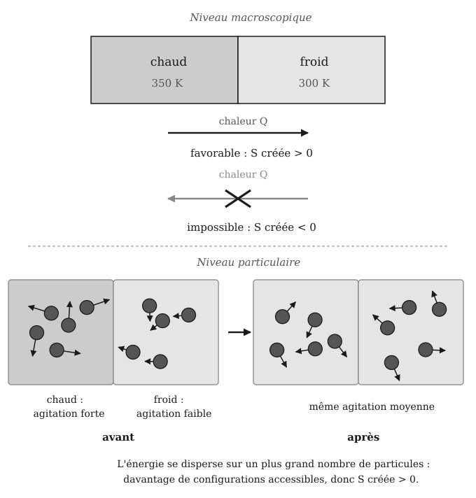
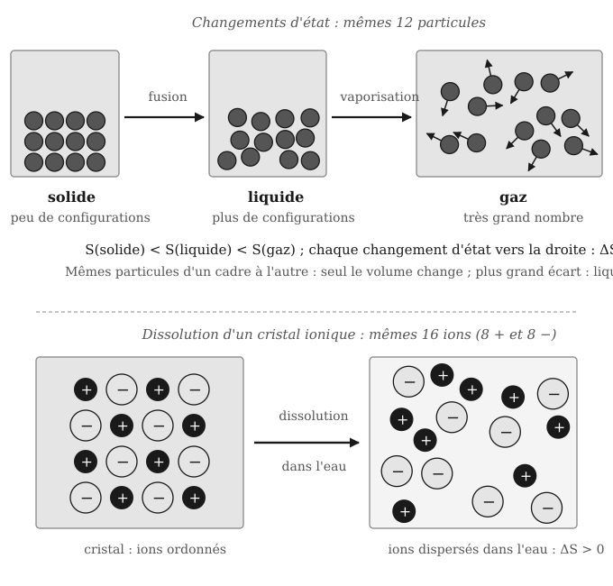
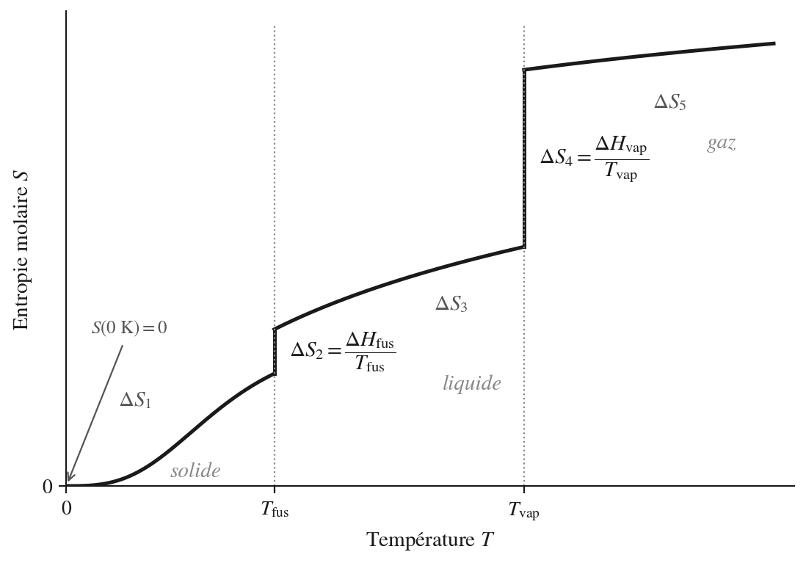
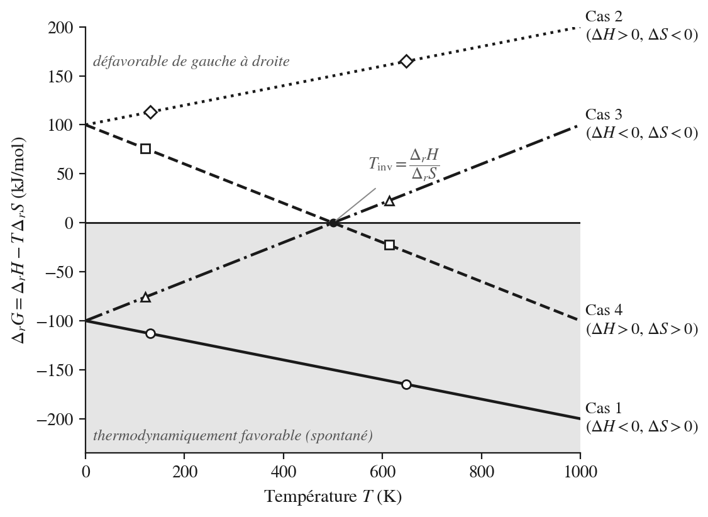
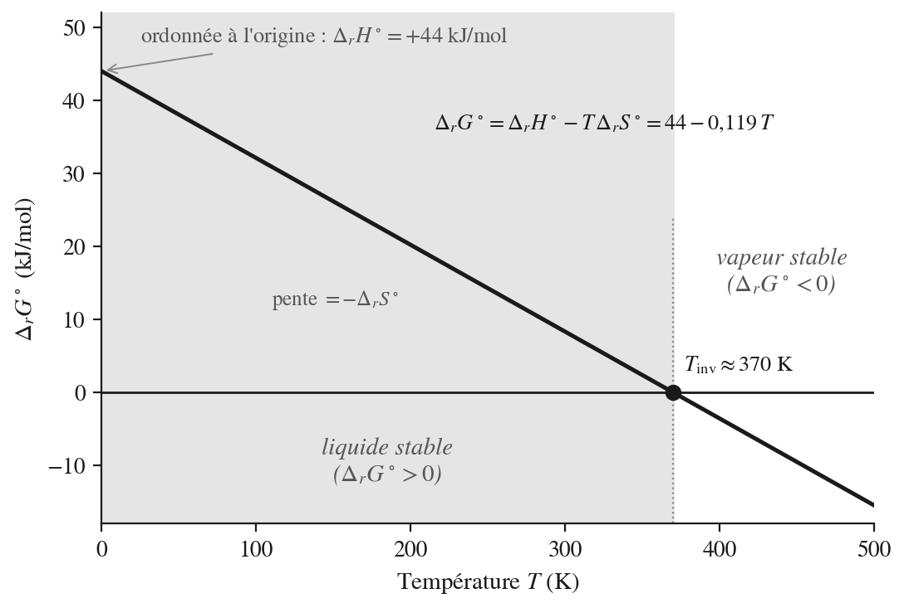
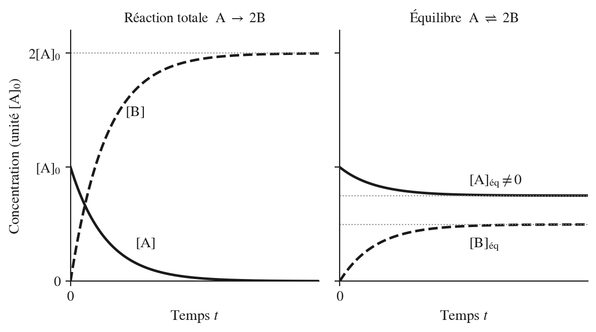
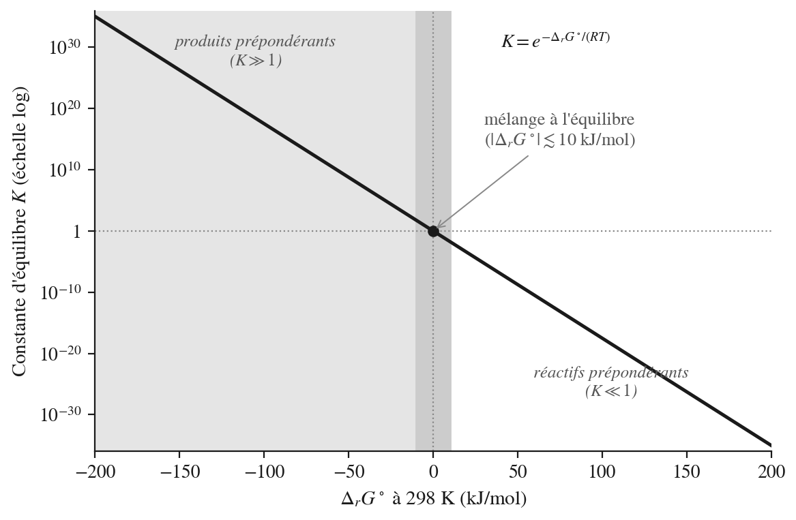
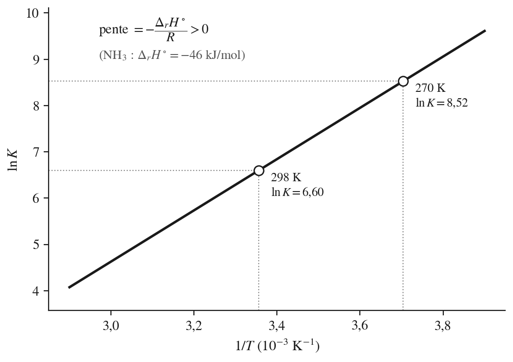
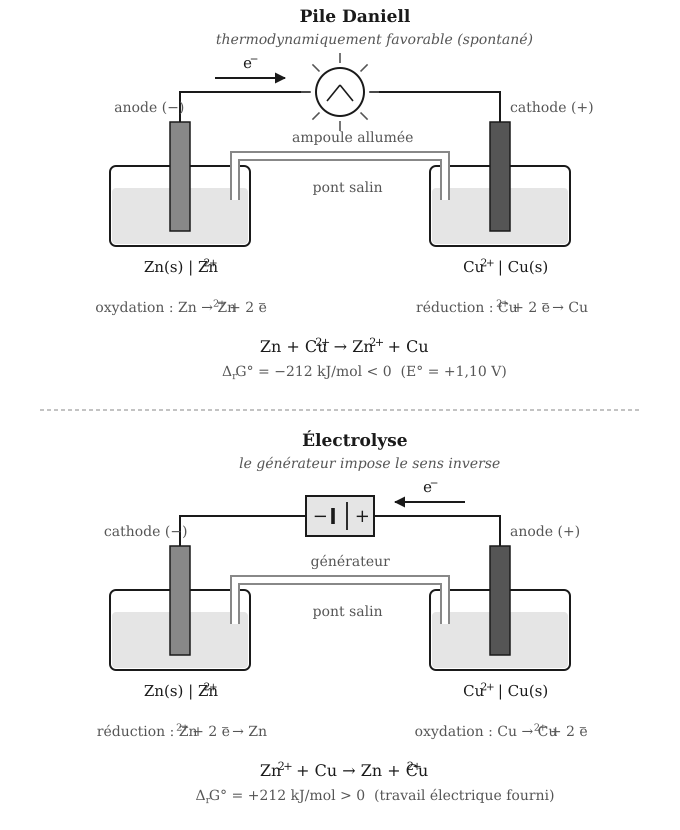

9 Thermochimie 2 — entropie et enthalpie libre
Enseignant·e ? Si vous avez une clé pilote (ou un jeton prof), ouvrez le suivi de votre classe.
Élève ? S’entraîner sur ce chapitre
Une remarque ? Écrivez-nous — coquille, question, suggestion.
9.1 Fiche de démarrage
Ce que nous savons déjà — Nous savons quantifier les échanges d’énergie d’une réaction chimique grâce à l’enthalpie de réaction \(\Delta_r H^\circ\). Nous savons la calculer à partir des enthalpies de formation tabulées ou par la loi de Hess, et interpréter son signe : une réaction exothermique libère de la chaleur, une réaction endothermique en absorbe.
Ce que ce chapitre construit — Ce chapitre répond à une question que l’enthalpie seule ne résout pas : une réaction est-elle thermodynamiquement favorable (spontanée), et dans quel sens ? Nous introduirons une deuxième grandeur, l’entropie \(S\), qui mesure la dispersion de l’énergie et de la matière dans un système. Nous verrons que le caractère favorable ne dépend pas seulement de l’enthalpie, et que le bilan entre ces deux contributions est résumé par l’enthalpie libre de Gibbs \(\Delta_r G^\circ\) : une grandeur unique qui prédit le sens thermodynamiquement favorable (spontané) d’une réaction et la température à laquelle ce sens peut s’inverser. Nous établirons enfin le lien \(\Delta_r G^\circ = -RT\ln K\) avec la constante d’équilibre \(K\).
Ce que nous saurons faire — À la fin de ce chapitre, nous serons capables de calculer \(\Delta_r S^\circ\) et \(\Delta_r G^\circ\) à partir de tables thermodynamiques, de déterminer le sens thermodynamiquement favorable (spontané) d’une réaction à une température donnée et sa température d’inversion, de relier \(\Delta_r G^\circ\) à la constante d’équilibre \(K\), et de prévoir comment \(K\) évolue avec la température. Nous reviendrons sur les piles, les électrolyses et les combustions du chapitre Oxydo-réduction pour les lire avec \(\Delta_r G^\circ\), en passant par la relation \(\Delta_r G^\circ = -nFE^\circ\). Nous finirons par une limite essentielle : une réaction très favorable peut être très lente, ce que l’énergie d’activation \(E_a\) explique ; elle prépare le chapitre Vitesse de réaction. L’étude détaillée de la constante d’équilibre fait l’objet du chapitre Équilibre chimique 1 ; ici, nous n’en posons que le lien avec l’enthalpie libre.
9.2 Rappels avant de commencer
Nous savons déjà que…
- L’enthalpie de réaction \(\Delta_r H^\circ\) quantifie l’énergie échangée sous forme de chaleur, à pression constante, lors d’une réaction chimique.
- Une réaction exothermique (\(\Delta_r H^\circ < 0\)) libère de la chaleur vers l’environnement ; une réaction endothermique (\(\Delta_r H^\circ > 0\)) en absorbe.
- \(\Delta_r H^\circ\) se calcule comme la différence entre la somme des enthalpies de formation des produits et celle des réactifs, pondérées par leurs coefficients stœchiométriques : \(\Delta_r H^\circ = \sum \nu\,\Delta_f H^\circ\).
- L’enthalpie de formation d’un corps simple dans son état standard est nulle par convention.
- Une chaleur échangée avec l’eau se calcule par \(Q = m\,C_p\,\Delta T\) et la température absolue s’exprime en kelvins : \(T\,(\text{K}) = \theta\,(^\circ\text{C}) + 273{,}15\).
- Le logarithme népérien et l’exponentielle sont des fonctions réciproques : \(\ln(e^x) = x\) et \(\ln 1 = 0\).
- Une réaction d’oxydo-réduction échange des électrons ; une pile fournit du courant grâce à une réaction thermodynamiquement favorable (spontanée), une électrolyse impose par un générateur une réaction qui ne l’est pas ; la tension standard d’une pile se lit dans le tableau des potentiels : \(E^\circ = E^\circ(\text{oxydant}) - E^\circ(\text{réducteur})\) (chapitre Oxydo-réduction).
- Une combustion est une réaction d’oxydo-réduction exothermique qui a besoin d’une amorce (étincelle, flamme) pour démarrer.
Ces acquis sont les points d’appui directs de ce chapitre — l’enthalpie de réaction est la première des deux contributions au caractère thermodynamiquement favorable (spontané) d’une réaction, et les kelvins comme le logarithme interviendront dès que nous relierons la température à l’entropie et à la constante d’équilibre.
Mini-test de positionnement — vérifions nos acquis avant de continuer :
- La combustion du méthane a \(\Delta_r H^\circ = -891\ \text{kJ/mol}\). La réaction est-elle exo- ou endothermique ? Le système cède-t-il de la chaleur à l’environnement, ou en absorbe-t-il ?
- Pourquoi \(\Delta_f H^\circ(\ce{O2(g)}) = 0\) par convention ?
- Convertissons \(25\ ^\circ\text{C}\) en kelvins, puis calculons \(\ln(1)\) et \(\ln(e^{3})\).
- Dans la pile \(\ce{Zn(s) + Cu^{2+}(aq) -> Zn^{2+}(aq) + Cu(s)}\), quelle espèce est oxydée ? Quelle est la tension standard \(E^\circ\) de la pile, sachant \(E^\circ(\ce{Cu^{2+}/Cu}) = +0{,}34\ \text{V}\) et \(E^\circ(\ce{Zn^{2+}/Zn}) = -0{,}76\ \text{V}\) ?
Si nous répondons sans hésiter aux quatre questions, nous sommes prêts — passons directement à la Zone 2. Si certaines réponses hésitent, relisons les points ci-dessus et le chapitre Thermochimie 1 avant de continuer.
9.3 Cours et exercices
9.3.1 Les trois principes et le caractère favorable d’une transformation
La thermochimie s’appuie sur trois lois fondamentales, appelées principes parce qu’elles ne se démontrent pas : on les admet parce qu’aucune expérience ne les a jamais contredites. Nous en connaissons déjà un.
| Principe | Énoncé | Ce qu’il permet |
|---|---|---|
| Premier | L’énergie de l’ensemble système + milieu extérieur se conserve : elle est échangée, jamais créée ni détruite. | Calculer la chaleur échangée : \(\Delta_r H^\circ\) (Thermochimie 1). |
| Deuxième | Toute transformation thermodynamiquement favorable (spontanée) s’accompagne d’une augmentation de l’entropie globale. | Prévoir le sens d’une transformation. |
| Troisième (Nernst) | L’entropie d’un cristal parfait est nulle à \(0\ \text{K}\). | Donner une origine absolue à l’entropie et tabuler des valeurs \(S^\circ\). |
Le premier principe dit combien d’énergie est échangée, mais il n’impose aucun sens à l’échange. Or l’expérience en impose un.
Dans l’histoire… En 1824, Sadi Carnot remarque que la chaleur ne passe d’elle-même que du corps chaud vers le corps froid, et que cette asymétrie limite le travail que l’on peut tirer d’une machine à vapeur. En 1850 puis en 1865, Rudolf Clausius transforme cette observation en principe général et invente pour la mesurer une grandeur nouvelle, qu’il baptise entropie à partir du grec tropê, « transformation ». Le deuxième principe est né de la question très concrète du rendement des machines.
Conception courante : on croit souvent qu’une réaction est favorable parce qu’elle libère de l’énergie — autrement dit, qu’une réaction exothermique est toujours thermodynamiquement favorable (spontanée) et qu’une réaction endothermique ne l’est jamais. C’est faux : la fusion de la glace est favorable à température ambiante, alors que la fusion est endothermique (\(\Delta H > 0\)), et la dissolution du nitrate d’ammonium dans l’eau, endothermique elle aussi (\(\Delta H^\circ_\text{diss} = +26\ \text{kJ/mol}\)), refroidit les compresses froides sans que personne ne la force. L’enthalpie seule ne prédit pas le sens d’une transformation.
Au niveau macroscopique : les transformations se produisent dans un sens précis. La chaleur s’écoule d’un corps chaud vers un corps froid — jamais l’inverse — jusqu’à une température finale commune. L’air d’un ballon de baudruche gonflé s’échappe lorsqu’on relâche l’embout — jamais l’air ambiant ne regonfle le ballon vide. Ces sens favorables, ou thermodynamiquement favorables (spontanés), s’observent dans la très grande majorité des transformations physiques et chimiques. Le mot « spontané », très employé, désigne exactement la même chose. Ni « favorable » ni « spontané » ne veulent dire « rapide » : ils décrivent le sens favorable, pas la vitesse (celle-ci relève du chapitre Vitesse de réaction).
Au niveau particulaire : un processus thermodynamiquement favorable (spontané) correspond à une évolution vers un état qui peut être réalisé par un plus grand nombre de configurations des particules. Un gaz qui se détend occupe un volume plus grand : il existe bien plus de façons de répartir ses molécules dans ce volume que dans le volume initial. Un transfert de chaleur chaud → froid disperse l’énergie sur davantage de molécules. C’est cette tendance vers les états les plus probables qui oriente les transformations.
Formalisation : le deuxième principe énonce que toute transformation thermodynamiquement favorable (spontanée) s’effectue avec une création d’entropie globale \(S_\text{créée}\), somme des variations d’entropie du système et du milieu extérieur :
\[S_\text{créée} = \Delta S_\text{sys} + \Delta S_\text{ext} > 0 \]
Le signe de \(S_\text{créée}\) caractérise le processus :
| \(S_\text{créée}\) | Nature du processus |
|---|---|
| \(= 0\) | Processus réversible — système à l’équilibre |
| \(> 0\) | Processus irréversible — transformation thermodynamiquement favorable (spontanée) |
| \(< 0\) | Processus impossible dans ce sens (favorable dans le sens inverse) |
Attention : \(S_\text{créée}\) se calcule toujours pour le système et son milieu extérieur ensemble — jamais pour le système seul. Le système peut perdre de l’entropie (\(\Delta S_\text{sys} < 0\)) lors d’un processus thermodynamiquement favorable (spontané), à condition que le milieu extérieur en gagne davantage.

un corps chaud à \(350\ \text{K}\) cède \(Q = 1000\ \text{J}\) à un corps froid à \(300\ \text{K}\). Chaque corps est assez grand pour que sa température ne change pas.
- Le corps chaud perd de l’entropie : \(\Delta S_\text{chaud} = -1000/350 = -2{,}857\ \text{J/K}\).
- Le corps froid en gagne : \(\Delta S_\text{froid} = +1000/300 = +3{,}333\ \text{J/K}\).
- Bilan : \(S_\text{créée} = -2{,}857 + 3{,}333 = +0{,}476\ \text{J/K} > 0\) — le transfert est thermodynamiquement favorable (spontané).
Dans le sens inverse (le froid cède \(1000\ \text{J}\) au chaud), les deux termes changent de signe et \(S_\text{créée} = -0{,}476\ \text{J/K} < 0\) : le transfert est impossible. Le même \(Q\) pèse plus lourd dans l’entropie du corps froid que dans celle du corps chaud : c’est la relation \(\Delta S = Q/T\), que nous retrouverons dans la section suivante.
- Une transformation a \(S_\text{créée} = -12\ \text{J/K}\). Est-elle thermodynamiquement favorable (spontanée) ? Justifions.1
- La chaleur s’écoule spontanément d’un corps chaud vers un corps froid. Quel est le signe de \(S_\text{créée}\) pour ce processus ?2
- Le système seul perd \(\Delta S_\text{sys} = -50\ \text{J/K}\) lors d’une transformation. Cette transformation peut-elle être favorable ? À quelle condition ?3
- Un corps à \(400\ \text{K}\) cède \(500\ \text{J}\) à un corps à \(300\ \text{K}\). Calculons \(S_\text{créée}\) et précisons le sens favorable.4
9.3.2 L’entropie : dispersion de l’énergie et de la matière
Conception courante : on assimile souvent l’entropie au désordre d’une pièce mal rangée. L’image est utile comme point de départ, mais sa limite est importante : le désordre dont parle l’entropie est celui des particules à l’échelle moléculaire — le nombre de configurations microscopiques possibles — et non l’arrangement visible à l’œil nu. Un gaz dans une pièce impeccablement rangée a une entropie élevée ; un cristal parfaitement ordonné a une entropie nulle à \(0\ \text{K}\).
Au niveau macroscopique : l’entropie est une fonction d’état extensive — proportionnelle à la quantité de matière — notée \(S\) et exprimée en joules par kelvin (\(\text{J/K}\)) ; son unité molaire est le \(\text{J·mol}^{-1}\text{·K}^{-1}\). Clausius a montré que la chaleur \(Q\) reçue par un système à la température \(T\) ne peut pas dépasser ce que l’entropie du système augmente :
\[\Delta S \;\geq\; \frac{Q}{T}\]
L’égalité vaut pour un échange parfaitement réversible ; pour un échange irréversible, l’entropie augmente de plus que \(Q/T\). Le système reçoit donc de la chaleur et autre chose. Cet « autre chose » s’exprime lui aussi en joules, mais ce n’est pas de la chaleur : c’est de l’énergie dispersée dans le système, homogénéisée, incapable de fournir un travail organisé. Dans un processus thermodynamiquement favorable (spontané), la quantité d’énergie ainsi dispersée augmente : plus l’entropie d’un système est élevée, moins ses éléments sont ordonnés et capables de produire des effets mécaniques organisés.
Au niveau particulaire : Boltzmann relie l’entropie au nombre \(W\) de configurations microscopiques (microétats) compatibles avec l’état macroscopique du système :
\[S = k_B \ln W \qquad k_B = 1{,}38 \cdot 10^{-23}\ \text{J/K}\]
Chaque particule d’un gaz qui passe d’un volume \(V\) à un volume \(2V\) dispose de deux fois plus de positions possibles : pour \(N\) particules, \(W\) est multiplié par \(2^N\) et \(\Delta S = N k_B \ln 2\), soit \(\Delta S = R\ln 2 = 5{,}76\ \text{J/K}\) pour une mole. Les transformations qui augmentent le nombre de configurations augmentent l’entropie : fusion, vaporisation, dissolution, augmentation du nombre de molécules gazeuses.
Dans l’histoire… C’est Ludwig Boltzmann qui donne à l’entropie son sens particulaire : en reliant \(S\) au nombre de microétats par \(S = k_B \ln W\), il montre que le deuxième principe est une loi de probabilité — les états désordonnés sont tout simplement les plus nombreux. Cette équation est gravée sur sa tombe, à Vienne.

Représentation symbolique : la variation d’entropie du milieu extérieur est reliée à la variation d’enthalpie du système par :
\[\Delta S_\text{ext} = -\frac{\Delta H_\text{sys}}{T} \]
À pression constante, la chaleur cédée par le système au milieu est \(-\Delta H_\text{sys}\) ; le milieu, supposé à température constante \(T\), voit donc son entropie varier de \(-\Delta H_\text{sys}/T\). À basse température, un même dégagement de chaleur crée davantage d’entropie dans l’environnement qu’à haute température.
La transformation \(\ce{H2O(l) -> H2O(s)}\) est thermodynamiquement favorable (spontanée) en dessous de \(0\ ^\circ\text{C}\). Vérifions-le avec le bilan entropique global.
- La transformation est thermodynamiquement favorable (spontanée) : \(S_\text{créée} > 0\).
- L’eau passe du liquide au solide : \(\Delta S_\text{sys} < 0\) (le système s’ordonne — il perd de l’entropie).
- La solidification est exothermique (\(\Delta H_\text{sys} < 0\)) : d’après \(\Delta S_\text{ext} = -\Delta H_\text{sys}/T\), le milieu extérieur gagne de l’entropie (\(\Delta S_\text{ext} > 0\)) — l’énergie libérée se disperse dans l’environnement.
- Pour que \(S_\text{créée} > 0\), il faut \(\Delta S_\text{ext} > |\Delta S_\text{sys}|\) — ce qui est vérifié en dessous de \(0\ ^\circ\text{C}\).
Au-dessus de \(0\ ^\circ\text{C}\), \(\Delta S_\text{ext}\) diminue (le même dégagement de chaleur est réparti à une température plus élevée) et l’inégalité s’inverse : \(|\Delta S_\text{sys}| > \Delta S_\text{ext}\), donc \(S_\text{créée} < 0\) — la congélation de l’eau n’est plus favorable. À \(0\ ^\circ\text{C}\) exactement, \(S_\text{créée} = 0\) : liquide et glace coexistent à l’équilibre.
Attention : l’entropie du système peut diminuer lors d’un processus thermodynamiquement favorable (spontané). C’est le bilan global — système + milieu extérieur — qui doit toujours augmenter.
- La fusion de la glace (\(\ce{H2O(s) -> H2O(l)}\)) est endothermique (\(\Delta H = +6{,}01\ \text{kJ/mol}\)) et pourtant elle est favorable à \(25\ ^\circ\text{C}\). Calculons \(\Delta S_\text{ext}\) à \(298\ \text{K}\) et déduisons le signe de \(S_\text{créée}\) (on admet \(\Delta S_\text{sys} = +22{,}0\ \text{J·mol}^{-1}\text{·K}^{-1}\), valeur de la fusion à \(273\ \text{K}\), supposée peu dépendante de \(T\)).5
- Parmi les transformations suivantes, laquelle attend-on avec \(\Delta S_\text{sys} > 0\) ? (a) \(\ce{H2O(l) -> H2O(s)}\) ; (b) \(\ce{NaCl(s) -> Na+(aq) + Cl-(aq)}\) ; (c) \(\ce{N2(g) + 3H2(g) -> 2NH3(g)}\).6
- Expliquons en une phrase pourquoi \(\Delta S_\text{ext}\) est plus grand à basse température qu’à haute température pour un même dégagement de chaleur.7
- La dissolution du nitrate d’ammonium est endothermique (\(\Delta H^\circ_\text{diss} = +26\ \text{kJ/mol}\)) mais thermodynamiquement favorable (spontanée). Calculons \(\Delta S_\text{ext}\) à \(298\ \text{K}\) pour une mole dissoute, puis donnons la condition que doit remplir \(\Delta S_\text{sys}\).8
- Une mole de gaz parfait double son volume à température constante. Quel est le signe de \(\Delta S_\text{sys}\) ? Calculons sa valeur avec \(\Delta S = R\ln 2\).9
9.3.3 Le troisième principe et l’entropie absolue
Bootstrapping : nous utilisons ici la capacité thermique \(C_p\), déjà rencontrée à propos de la calorimétrie (Thermochimie 1). Retenons qu’elle mesure l’énergie nécessaire pour élever la température d’une substance d’un kelvin. Le logarithme népérien, vu dans la Zone 1, intervient dans le calcul.
Formalisation : le troisième principe de la thermodynamique — ou principe de Nernst — stipule que :
\[S(\text{cristal parfait},\ 0\ \text{K}) = 0 \]
Dans l’histoire… En 1906, Walther Nernst constate expérimentalement que les variations d’entropie des transformations s’annulent quand la température tend vers le zéro absolu. Il en tire le troisième principe : l’entropie d’un cristal parfait est nulle à \(0\ \text{K}\). Cette borne permet de passer d’entropies relatives à des entropies absolues, que l’on tabule. Nernst reçoit le prix Nobel de chimie en 1920.
Ce principe fixe une origine absolue pour l’entropie : un cristal parfait à \(0\ \text{K}\) n’a qu’une seule configuration possible (\(W = 1\), donc \(S = k_B \ln 1 = 0\)). Contrairement à l’enthalpie, dont on ne mesure que des variations \(\Delta_r H^\circ\) (de même que l’enthalpie libre \(G\), introduite plus loin), l’entropie est la seule fonction d’état calculable de façon absolue.
Au niveau macroscopique : à partir de cette origine, on obtient l’entropie molaire absolue \(S_T\) d’un corps pur à toute température en additionnant les contributions successives depuis \(0\ \text{K}\). Pour un corps pur qui passe de \(0\ \text{K}\) à l’état gazeux à la température \(T\) :
\[S_T = \Delta S_1 + \Delta S_2 + \Delta S_3 + \Delta S_4 + \Delta S_5 \]
| Contribution | Processus | Expression (par mole) |
|---|---|---|
| \(\Delta S_1\) | Échauffement du solide de \(0\ \text{K}\) à \(T_\text{fus}\) | \(\displaystyle\int_0^{T_\text{fus}} \dfrac{C_p(s)}{T}\,dT\) |
| \(\Delta S_2\) | Fusion à \(T_\text{fus}\) | \(\dfrac{\Delta H_\text{fus}}{T_\text{fus}}\) |
| \(\Delta S_3\) | Échauffement du liquide de \(T_\text{fus}\) à \(T_\text{vap}\) | \(C_p(l)\,\ln\dfrac{T_\text{vap}}{T_\text{fus}}\) |
| \(\Delta S_4\) | Vaporisation à \(T_\text{vap}\) | \(\dfrac{\Delta H_\text{vap}}{T_\text{vap}}\) |
| \(\Delta S_5\) | Échauffement du gaz de \(T_\text{vap}\) à \(T\) | \(C_p(g)\,\ln\dfrac{T}{T_\text{vap}}\) |
Les expressions en logarithme supposent \(C_p\) constante sur l’intervalle. Ce n’est pas le cas du solide près de \(0\ \text{K}\), où \(C_p\) tend vers zéro : \(\Delta S_1\) s’obtient par intégration des mesures de \(C_p(T)\), et c’est précisément parce que \(C_p \to 0\) que l’intégrale reste finie. Les trois échauffements ont la même forme mathématique mais correspondent à trois phases de capacités thermiques différentes : on ne peut pas les regrouper.

Au niveau particulaire : les sauts de la courbe correspondent à des changements d’état, où la chaleur absorbée libère un grand nombre de configurations nouvelles. L’eau l’illustre : la fusion (\(\Delta H_\text{fus} = 6{,}01\ \text{kJ/mol}\) à \(273{,}15\ \text{K}\)) apporte \(\Delta S_2 = 6010/273{,}15 = 22{,}0\ \text{J·mol}^{-1}\text{·K}^{-1}\), alors que la vaporisation (\(\Delta H_\text{vap} = 40{,}7\ \text{kJ/mol}\) à \(373{,}15\ \text{K}\)) apporte \(\Delta S_4 = 40\,700/373{,}15 = 109\ \text{J·mol}^{-1}\text{·K}^{-1}\), cinq fois plus : les molécules de gaz sont libres de se déplacer dans tout le volume, celles du liquide restent en contact.
En pratique, ce calcul complet est rarement nécessaire : les tables thermodynamiques fournissent directement les entropies molaires standard \(S^\circ\) à \(298\ \text{K}\) et \(1\ \text{atm}\), en \(\text{J·mol}^{-1}\text{·K}^{-1}\) (annexe de ce chapitre pour la liste complète).
Attention : contrairement aux enthalpies de formation \(\Delta_f H^\circ\), les entropies molaires standard \(S^\circ\) des corps simples ne sont pas nulles — elles sont toutes positives, car à \(298\ \text{K}\) tout corps pur est déjà bien au-dessus de \(0\ \text{K}\). Confondre les deux conventions est l’erreur la plus fréquente dans le calcul de \(\Delta_r S^\circ\).
Extrait de la table des entropies molaires standard à \(298\ \text{K}\) :
| Solides | \(S^\circ\) | Liquides | \(S^\circ\) | Gaz | \(S^\circ\) |
|---|---|---|---|---|---|
| \(\ce{C}\) (graphite) | \(5{,}7\) | \(\ce{H2O}\) | \(70\) | \(\ce{H2}\) | \(131\) |
| \(\ce{Fe}\) | \(27\) | \(\ce{CH3OH}\) | \(127\) | \(\ce{N2}\) | \(192\) |
| \(\ce{Al}\) | \(28\) | \(\ce{C2H5OH}\) | \(161\) | \(\ce{O2}\) | \(205\) |
| \(\ce{Cu}\) | \(33\) | \(\ce{Br2}\) | \(152\) | \(\ce{H2O}\) | \(189\) |
| \(\ce{NaCl}\) | \(72\) | \(\ce{CO2}\) | \(214\) | ||
| \(\ce{CaCO3}\) | \(92\) | \(\ce{NH3}\) | \(193\) | ||
| \(\ce{CH4}\) | \(186\) | ||||
| \(\ce{C3H8}\) | \(270\) |
(Valeurs en \(\text{J·mol}^{-1}\text{·K}^{-1}\), table CRM.) Deux tendances se lisent d’un coup d’œil : \(S^\circ(\text{solide}) < S^\circ(\text{liquide}) < S^\circ(\text{gaz})\) pour une même substance (par exemple l’eau), et, à état physique égal, \(S^\circ\) augmente avec la complexité de la molécule (méthane \(186\) < propane \(270\) < butane \(310\)), car une molécule plus grande a plus de façons de bouger et de vibrer.
- Pourquoi \(S^\circ(\ce{O2(g)}) \neq 0\) alors que \(\Delta_f H^\circ(\ce{O2(g)}) = 0\) ? Expliquons la différence de convention.10
- Parmi \(\ce{H2O(l)}\) et \(\ce{H2O(g)}\), lequel a l’entropie molaire standard la plus élevée ? Justifions sans consulter la table, puis vérifions.11
- En utilisant la table, vérifions que \(S^\circ(\ce{C, graphite}) < S^\circ(\ce{CO2(g)})\) est cohérent avec les règles sur les états physiques.12
- Classons par entropie molaire standard croissante, sans table : \(\ce{CH4(g)}\), \(\ce{C4H10(g)}\), \(\ce{C2H6(g)}\). Quelle règle utilisons-nous ?13
9.3.4 Variation qualitative d’entropie de réaction
Conception courante : on croit parfois que le signe de la variation d’entropie d’une réaction est imprévisible sans calcul. En réalité, deux règles simples permettent souvent de le prédire sans aucune table.
Au niveau macroscopique : une réaction qui libère un gaz se voit : bulles d’une pastille effervescente dans l’eau, dioxyde de carbone qui s’échappe du calcaire chauffé (\(\ce{CaCO3(s) -> CaO(s) + CO2(g)}\)). À l’inverse, des gouttes d’eau sur la paroi d’un récipient froid signalent qu’un gaz est devenu liquide. Ce qu’on voit — un gaz apparaît ou disparaît — est exactement ce qui commande le signe de \(\Delta_r S^\circ\).
Au niveau particulaire : une molécule de gaz explore tout le volume disponible, alors qu’un solide cantonne ses particules à des positions fixes. Passer d’un solide ou d’un liquide à un gaz multiplie les configurations accessibles ; passer d’un gaz à un solide ou à un liquide les réduit fortement.
Règle 1 — états physiques : le nombre de configurations augmente dans l’ordre solide < liquide < gaz. Toute réaction qui produit des espèces dans un état plus « dispersé » que les réactifs a \(\Delta_r S^\circ > 0\).
Règle 2 — nombre de moles de gaz : lorsque le nombre de moles de gaz augmente au cours de la réaction, \(\Delta_r S^\circ > 0\) ; lorsqu’il diminue, \(\Delta_r S^\circ < 0\). Les solides et les liquides contribuent beaucoup moins à l’entropie que les gaz : leur variation de nombre de moles est secondaire. Une dissolution ou la formation d’un précipité suit la même logique : des ions dispersés en solution comptent comme un état plus « dispersé » qu’un cristal.
Au niveau symbolique : pour la réaction \(\ce{2 SO2(g) + O2(g) -> 2 SO3(g)}\), on passe de \(3\) moles de gaz à \(2\) moles de gaz : le nombre de configurations diminue, donc \(\Delta_r S^\circ < 0\), sans aucun calcul. Lorsque le nombre de moles de gaz est le même des deux côtés (ou qu’il n’y a que des solides), les règles ne tranchent pas : seul un calcul à partir des \(S^\circ\) tabulés permet de conclure.
prédisons qualitativement le signe de \(\Delta_r S^\circ\) pour chacune des réactions suivantes, en justifiant avec les deux règles.
\(\ce{2 SO2(g) + O2(g) -> 2 SO3(g)}\)
\(\ce{2 SO2(g) + O2(g) + 2 H2O(l) -> 2 H2SO4(l)}\)
\(\ce{2 Al(s) + Fe2O3(s) -> Al2O3(s) + 2 Fe(s)}\)
Indications : comptons les moles de gaz de chaque côté de la flèche, puis comparons les états physiques.
Réponses : a) \(3\) mol de gaz \(\to\) \(2\) mol de gaz : \(\Delta_r S^\circ < 0\). b) \(3\) mol de gaz \(\to\) \(0\) mol de gaz : \(\Delta_r S^\circ \ll 0\). c) uniquement des solides des deux côtés : les règles ne permettent pas de conclure. Un calcul est nécessaire (la section suivante montre que \(\Delta_r S^\circ = -38\ \text{J·mol}^{-1}\text{·K}^{-1}\)).
- Prédisons le signe de \(\Delta_r S^\circ\) pour : (a) \(\ce{CaCO3(s) -> CaO(s) + CO2(g)}\) ; (b) \(\ce{H2(g) + I2(g) -> 2HI(g)}\) ; (c) \(\ce{Ag+(aq) + Cl-(aq) -> AgCl(s)}\).14
- La réaction \(\ce{N2(g) + O2(g) -> 2NO(g)}\) implique le même nombre de moles de gaz des deux côtés. Peut-on prédire le signe de \(\Delta_r S^\circ\) sans calcul ? Que faut-il faire ?15
- Classons par entropie molaire standard croissante, sans consulter de table : \(\ce{Fe(s)}\), \(\ce{Cl2(g)}\), \(\ce{H2O(l)}\).16
- Prédisons le signe de \(\Delta_r S^\circ\) pour la combustion de l’éthyne : \(\ce{C2H2(g) + 5/2 O2(g) -> 2 CO2(g) + H2O(l)}\), puis pour la combustion de l’éthanol liquide avec production de vapeur d’eau : \(\ce{C2H5OH(l) + 3 O2(g) -> 2 CO2(g) + 3 H2O(g)}\).17
9.3.5 Variation quantitative d’entropie de réaction
Formalisation : de la même manière que pour l’enthalpie, l’entropie standard de réaction \(\Delta_r S^\circ\) se calcule à partir des entropies molaires standard tabulées :
\[\Delta_r S^\circ = \sum \nu_\text{produits} \cdot S^\circ(\text{produits}) - \sum \nu_\text{réactifs} \cdot S^\circ(\text{réactifs}) \]
\[\ce{2 H2(g) + O2(g) -> 2 H2O(g)}\]
\[\Delta_r S^\circ = 2 \cdot S^\circ(\ce{H2O,g}) - 2 \cdot S^\circ(\ce{H2,g}) - S^\circ(\ce{O2,g}) = 2 \times 189 - 2 \times 131 - 205 = -89\ \text{J·mol}^{-1}\text{·K}^{-1}\]
Le signe négatif était prévisible : le nombre de moles de gaz diminue (\(3\) mol \(\to\) \(2\) mol), donc le nombre de configurations diminue.
\[\ce{N2(g) + 3 H2(g) -> 2 NH3(g)} \quad \Delta_r H^\circ = 2 \times (-46) = -92\ \text{kJ/mol}\]
Étape 1 — \(\Delta_r S^\circ\) du système :
\[\Delta_r S^\circ = 2 \cdot S^\circ(\ce{NH3}) - S^\circ(\ce{N2}) - 3 \cdot S^\circ(\ce{H2}) = 2 \times 193 - 192 - 3 \times 131 = -199\ \text{J·mol}^{-1}\text{·K}^{-1}\]
Étape 2 — \(\Delta S_\text{ext}\) (attention : convertir \(\Delta_r H^\circ\) en J/mol) :
\[\Delta S_\text{ext} = -\frac{\Delta_r H^\circ}{T} = -\frac{-92\,000\ \text{J/mol}}{298\ \text{K}} = +309\ \text{J·mol}^{-1}\text{·K}^{-1}\]
Étape 3 — bilan entropique global :
\[S_\text{créée} = \Delta_r S^\circ + \Delta S_\text{ext} = -199 + 309 = +110\ \text{J·mol}^{-1}\text{·K}^{-1} > 0\]
La réaction est thermodynamiquement favorable (spontanée) à \(298\ \text{K}\) : la perte d’entropie du système est plus que compensée par l’entropie gagnée par le milieu, qui reçoit la chaleur dégagée.
pour \(\ce{2 H2(g) + O2(g) -> 2 H2O(l)}\), \(\Delta_r H^\circ = 2 \times (-286) = -572\ \text{kJ}\) et \(\Delta_r S^\circ = 2 \times 70 - 2 \times 131 - 205 = -327\ \text{J/K}\). Le milieu reçoit la chaleur : \(\Delta S_\text{ext} = 572\,000/298 = +1920\ \text{J/K}\) et \(S_\text{créée} = -327 + 1920 = +1593\ \text{J/K}\). Le système s’ordonne beaucoup, mais le milieu gagne près de six fois plus d’entropie : la réaction est très fortement thermodynamiquement favorable (spontanée).
pour la réaction aluminothermique \(\ce{2 Al(s) + Fe2O3(s) -> Al2O3(s) + 2 Fe(s)}\) (tous solides), \(\Delta_r S^\circ = 51 + 2 \times 27 - 2 \times 28 - 87 = -38\ \text{J·mol}^{-1}\text{·K}^{-1}\). Le signe n’était pas prévisible : il vient de la différence entre des solides de compositions différentes. Comme \(\Delta_r H^\circ = -1676 + 824 = -852\ \text{kJ}\) est très négative, \(\Delta S_\text{ext} = +2859\ \text{J/K}\) domine largement : la réaction est thermodynamiquement favorable (spontanée).
Attention : l’unité de \(\Delta_r S^\circ\) est le \(\text{J·mol}^{-1}\text{·K}^{-1}\) alors que celle de \(\Delta_r H^\circ\) est le \(\text{kJ/mol}\). Pour additionner \(\Delta_r S^\circ\) et \(\Delta S_\text{ext}\), il faut les exprimer dans la même unité : convertir \(\Delta_r H^\circ\) en J/mol avant de diviser par \(T\).
calculons \(\Delta_r S^\circ\) pour la combustion du propane \(\ce{C3H8(g) + 5 O2(g) -> 3 CO2(g) + 4 H2O(g)}\). Le signe était-il prévisible ?18
- Calculons \(\Delta_r S^\circ\) pour \(\ce{CaCO3(s) -> CaO(s) + CO2(g)}\) et comparons au signe prédit à la section précédente.19
- Calculons \(\Delta_r S^\circ\) pour la combustion de l’éthanol liquide avec production de vapeur d’eau, \(\ce{C2H5OH(l) + 3 O2(g) -> 2 CO2(g) + 3 H2O(g)}\).20
- Calculons \(\Delta_r S^\circ\) pour \(\ce{Fe2O3(s) + 3 H2(g) -> 2 Fe(s) + 3 H2O(g)}\) et expliquons son signe.21
- Pour \(\ce{CaCO3(s) -> CaO(s) + CO2(g)}\) (\(\Delta_r H^\circ = +178\ \text{kJ/mol}\)), calculons \(\Delta S_\text{ext}\) et \(S_\text{créée}\) à \(298\ \text{K}\). La réaction est-elle thermodynamiquement favorable (spontanée) à cette température ?22
9.3.6 L’enthalpie libre de Gibbs
Attention : cette section introduit une fonction nouvelle, l’enthalpie libre, et son lien avec le caractère thermodynamiquement favorable (spontané) d’une réaction. Lisons-la en deux temps : d’abord la dérivation, puis le tableau des quatre cas.
Conception courante : on croit souvent qu’il faut calculer \(S_\text{créée} = \Delta S_\text{sys} + \Delta S_\text{ext}\) à chaque fois pour prédire le sens favorable — ce qui oblige à raisonner sur le milieu extérieur. Il existe pourtant une grandeur qui intègre les deux contributions et ne dépend que du système.
Dans l’histoire… Josiah Willard Gibbs (1839–1903) assemble les deux principes en une seule grandeur, publiée entre 1875 et 1878 dans les Transactions de l’Académie du Connecticut, une revue très peu lue. L’enthalpie libre \(G = H - TS\) lui permet de prédire, avec le seul signe d’une variation, si un système évolue de façon favorable à température et pression constantes. Ses travaux n’ont été largement connus qu’après leur traduction en allemand par Ostwald, en 1892.
Dérivation depuis le deuxième principe :
On part de la condition de transformation favorable (\(S_\text{créée} > 0\)) :
\[S_\text{créée} = \Delta S_\text{sys} + \Delta S_\text{ext} > 0\]
On substitue \(\Delta S_\text{ext} = -\Delta H_\text{sys}/T\) :
\[S_\text{créée} = \Delta S_\text{sys} - \frac{\Delta H_\text{sys}}{T} > 0\]
On multiplie tous les membres par \(-T\) (attention : le sens de l’inégalité s’inverse car \(T > 0\)) :
\[-T \cdot S_\text{créée} = \Delta H_\text{sys} - T \cdot \Delta S_\text{sys} < 0\]
Le membre de droite ne contient que des propriétés du système. Il définit la variation d’enthalpie libre de Gibbs :
\[\boxed{\Delta G = \Delta H - T \cdot \Delta S = -T \cdot S_\text{créée}} \]
Pour une réaction dans les conditions standards, on la note \(\Delta_r G^\circ = \Delta_r H^\circ - T\,\Delta_r S^\circ\). Comme pour \(H\), seules les variations de \(G\) sont définies (voir le troisième principe) : on ne parle jamais de la valeur absolue de \(G\).
Puisque \(\Delta G = -T\,S_\text{créée}\), le signe de \(\Delta G\) est l’opposé de celui de \(S_\text{créée}\) :
| Signe de \(\Delta G\) (à \(T\) et \(P\) constantes) | Nature du processus |
|---|---|
| \(\Delta G < 0\) | thermodynamiquement favorable (spontané) de gauche à droite |
| \(\Delta G = 0\) | équilibre (réversible) |
| \(\Delta G > 0\) | défavorable de gauche à droite (favorable en sens inverse) |
Remarque : le critère \(\Delta G < 0\) s’applique au système tel qu’il est. La grandeur \(\Delta_r G^\circ\) décrit la transformation de réactifs purs, tous dans l’état standard, en produits purs, tous dans l’état standard. Pour un mélange réel, le sens de l’évolution dépend aussi des quantités présentes ; le lien se fait par la constante d’équilibre, dans la section suivante, et sera précisé au chapitre Équilibre chimique 1.
Au niveau particulaire : deux tendances s’opposent. Former des liaisons plus stables abaisse l’énergie (\(\Delta H < 0\)) ; disperser les particules sur davantage de configurations augmente l’entropie (\(\Delta S > 0\)). Le facteur \(T\) donne du poids à la dispersion : plus il fait chaud, plus l’agitation favorise les états dispersés. \(\Delta G\) est le résultat net de cette compétition.
Analogie : imaginons un lac de montagne relié à une turbine par un tuyau. L’eau qui descend d’elle-même peut fournir du travail — mais seulement si la différence d’altitude est suffisante. De même, une réaction chimique est thermodynamiquement favorable (spontanée) si \(\Delta G\) est négative. Limite de l’analogie : contrairement à l’altitude, \(\Delta G\) dépend à la fois de l’énergie et de la dispersion, et sa valeur change avec la température.
Représentation symbolique — le signe de \(\Delta_r G^\circ\) :
| Cas | \(\Delta_r H^\circ\) | \(\Delta_r S^\circ\) | \(\Delta_r G^\circ\) | Caractère favorable |
|---|---|---|---|---|
| 1 | \(-\) | \(+\) | toujours \(-\) | thermodynamiquement favorable (spontanée) de gauche à droite à toute température |
| 2 | \(+\) | \(-\) | toujours \(+\) | défavorable de gauche à droite à toute température (favorable en sens inverse) |
| 3 | \(-\) | \(-\) | \(-\) si \(T\) petite | favorable de gauche à droite à basse température uniquement |
| 4 | \(+\) | \(+\) | \(-\) si \(T\) grande | favorable de gauche à droite à haute température uniquement |
Les cas 3 et 4 montrent qu’une réaction peut changer de sens thermodynamiquement favorable (spontané) selon la température — c’est le terme \(T\,\Delta_r S^\circ\) qui l’emporte à haute température.

Exemples illustratifs :
Cas 1 — \(\Delta_r H^\circ < 0\) et \(\Delta_r S^\circ > 0\) : \(\ce{2 H2O2(l) -> 2 H2O(l) + O2(g)}\) — exothermique (\(\Delta_r H^\circ = 2 \times (-286) - 2 \times (-188) = -196\ \text{kJ}\)) et production de gaz (\(\Delta_r S^\circ = 2 \times 70 + 205 - 2 \times 110 = +125\ \text{J/K}\)). \(\Delta_r G^\circ = -196 - 298 \times 0{,}125 = -233\ \text{kJ} < 0\) à toute température.
Cas 2 — \(\Delta_r H^\circ > 0\) et \(\Delta_r S^\circ < 0\) : \(\ce{3 O2(g) -> 2 O3(g)}\) — endothermique (\(\Delta_r H^\circ = +285{,}4\ \text{kJ}\), donnée de l’énoncé : \(\Delta_f H^\circ(\ce{O3}) = +142{,}7\ \text{kJ/mol}\)) et perte de moles de gaz (\(\Delta_r S^\circ = -137\ \text{J/K}\)). \(\Delta_r G^\circ = 285{,}4 + 298 \times 0{,}137 = +326\ \text{kJ} > 0\) à toute température.
Cas 3 — \(\Delta_r H^\circ < 0\) et \(\Delta_r S^\circ < 0\) : \(\ce{H2O(g) -> H2O(l)}\) — condensation (\(\Delta_r H^\circ = -286 + 242 = -44\ \text{kJ}\) ; \(\Delta_r S^\circ = 70 - 189 = -119\ \text{J/K}\)), thermodynamiquement favorable (spontanée) à basse température, défavorable à haute température.
Cas 4 — \(\Delta_r H^\circ > 0\) et \(\Delta_r S^\circ > 0\) : \(\ce{H2O(s) -> H2O(l)}\) (\(\Delta H = +6{,}01\ \text{kJ}\), \(\Delta S = +22{,}0\ \text{J/K}\)) — fusion, thermodynamiquement favorable (spontanée) à haute température, défavorable à basse température.
\[\ce{N2H4(l) + 2 H2O2(l) -> N2(g) + 4 H2O(g)}\]
Données de l’énoncé : \(\Delta_r H^\circ = -642{,}6\ \text{kJ/mol}\) ; \(\Delta_r S^\circ = +605\ \text{J·mol}^{-1}\text{·K}^{-1}\).
\[\Delta_r G^\circ = \Delta_r H^\circ - T \cdot \Delta_r S^\circ = -642{,}6 - 298 \times 0{,}605 = -642{,}6 - 180{,}3 = -822{,}9\ \text{kJ/mol}\]
\(\Delta_r G^\circ \ll 0\) — réaction très fortement thermodynamiquement favorable (spontanée) à \(298\ \text{K}\). Elle relève du cas 1 : favorable à toute température. (Ce couple sert à propulser des fusées.)
- Pour une réaction avec \(\Delta_r H^\circ = -120\ \text{kJ/mol}\) et \(\Delta_r S^\circ = +85\ \text{J·mol}^{-1}\text{·K}^{-1}\), calculons \(\Delta_r G^\circ\) à \(298\ \text{K}\). Dans quel cas du tableau se place-t-elle ?23
- Classons chaque réaction dans l’un des quatre cas : (a) \(\ce{H2(g) + Cl2(g) -> 2 HCl(g)}\) (\(\Delta_r H^\circ = -184\ \text{kJ}\), \(\Delta_r S^\circ = +20\ \text{J/K}\)) ; (b) \(\ce{N2(g) + O2(g) -> 2 NO(g)}\) (\(+182\ \text{kJ}\), \(+25\ \text{J/K}\)) ; (c) \(\ce{2 NO(g) + O2(g) -> 2 NO2(g)}\) (\(-116\ \text{kJ}\), \(-147\ \text{J/K}\)).24
- Une réaction a \(\Delta_r H^\circ = -57{,}2\ \text{kJ/mol}\) et \(\Delta_r S^\circ = -175{,}8\ \text{J·mol}^{-1}\text{·K}^{-1}\) (\(\ce{2NO2(g) -> N2O4(g)}\)). Calculons \(\Delta_r G^\circ\) à \(298\ \text{K}\) et à \(400\ \text{K}\). Que constatons-nous ?25
- Un élève affirme : « puisque \(\Delta_r H^\circ = +44\ \text{kJ/mol}\), l’évaporation de l’eau n’est jamais thermodynamiquement favorable (spontanée) ». Où est l’erreur ?26
9.3.7 La température d’inversion et les changements d’état
Dans les cas 3 et 4, le signe de \(\Delta_r G^\circ\) change avec la température. La température d’inversion \(T_\text{inv}\) est celle pour laquelle \(\Delta_r G^\circ = 0\) : en dessous, la réaction va dans un sens ; au-dessus, dans l’autre. En posant \(\Delta_r G^\circ = 0\) dans \(\Delta_r G^\circ = \Delta_r H^\circ - T\,\Delta_r S^\circ\) :
\[T_\text{inv} = \frac{\Delta_r H^\circ}{\Delta_r S^\circ} \]
Graphiquement, \(\Delta_r G^\circ = \Delta_r H^\circ - T\,\Delta_r S^\circ\) est une droite de la température, de pente \(-\Delta_r S^\circ\) et d’ordonnée à l’origine \(\Delta_r H^\circ\) ; \(T_\text{inv}\) est l’abscisse où elle coupe l’axe \(\Delta_r G^\circ = 0\). Pour que \(T_\text{inv}\) soit une température positive, il faut que \(\Delta_r H^\circ\) et \(\Delta_r S^\circ\) aient le même signe (cas 3 et 4).
Au niveau macroscopique : un changement d’état est une inversion que nous observons tous les jours. L’eau liquide s’évapore (processus favorable) au-dessus de \(100\ ^\circ\text{C}\) (à la pression atmosphérique) et la vapeur se condense en dessous. À la température d’inversion, liquide et vapeur coexistent : \(\Delta_r G^\circ = 0\), \(S_\text{créée} = 0\). La température d’inversion d’un changement d’état est donc simplement sa température de changement d’état.
Au niveau symbolique — l’évaporation de l’eau : \(\ce{H2O(l) -> H2O(g)}\) a \(\Delta_r H^\circ = -242 + 286 = +44\ \text{kJ/mol}\) et \(\Delta_r S^\circ = 189 - 70 = +119\ \text{J·mol}^{-1}\text{·K}^{-1}\) :
\[T_\text{inv} = \frac{44\,000}{119} = 370\ \text{K} \approx 97\ ^\circ\text{C}\]
Les valeurs de la table donnent \(97\ ^\circ\text{C}\), à \(3\ ^\circ\text{C}\) de la valeur mesurée (\(100\ ^\circ\text{C}\)) : l’écart vient de l’arrondi des tables.
\(\ce{H2O2(l) -> H2O2(g)}\). Données : \(\Delta_f H^\circ(\ce{H2O2,l}) = -188\ \text{kJ/mol}\) et \(S^\circ = 110\ \text{J·mol}^{-1}\text{·K}^{-1}\) (table) ; pour le gaz, données de l’énoncé : \(\Delta_f H^\circ(\ce{H2O2,g}) = -136\ \text{kJ/mol}\), \(S^\circ = 233\ \text{J·mol}^{-1}\text{·K}^{-1}\). On obtient \(\Delta_r H^\circ = +52\ \text{kJ/mol}\) et \(\Delta_r S^\circ = +123\ \text{J·mol}^{-1}\text{·K}^{-1}\), d’où
\[T_\text{inv} = \frac{52\,000}{123} = 423\ \text{K} = 150\ ^\circ\text{C}\]
ce qui est la température d’ébullition du peroxyde d’hydrogène pur (\(150\ ^\circ\text{C}\)). À \(163\ ^\circ\text{C}\) (\(436\ \text{K}\)), \(\Delta_r G^\circ = 52\,000 - 436 \times 123 = -1{,}6\ \text{kJ/mol} < 0\) : l’évaporation est thermodynamiquement favorable (spontanée), avec une faible création d’entropie \(S_\text{créée} = -\Delta_r G^\circ/T = +3{,}8\ \text{J·mol}^{-1}\text{·K}^{-1}\). À \(150\ ^\circ\text{C}\) exactement, \(S_\text{créée} = 0\) : liquide et vapeur sont à l’équilibre.
Attention — domaine de validité : pour calculer \(\Delta_r G^\circ\) à une autre température que \(298\ \text{K}\), nous prenons \(\Delta_r H^\circ\) et \(\Delta_r S^\circ\) constants (leur variation avec \(T\) est faible devant leur valeur). Cette approximation n’est valable que tant qu’aucune espèce ne change d’état dans l’intervalle de température considéré. Par exemple, une réaction qui consomme \(\ce{H2O(l)}\) ne peut pas être traitée à \(400\ \text{K}\) avec les valeurs de \(\ce{H2O(l)}\) : à cette température l’eau est un gaz, et il faut refaire le calcul avec \(\ce{H2O(g)}\).

- La décomposition \(\ce{N2O4(g) -> 2NO2(g)}\) a \(\Delta_r H^\circ = +57{,}2\ \text{kJ/mol}\) et \(\Delta_r S^\circ = +175{,}8\ \text{J·mol}^{-1}\text{·K}^{-1}\). Calculons \(T_\text{inv}\) et interprétons.27
- Calculons \(T_\text{inv}\) de la décomposition du calcaire \(\ce{CaCO3(s) -> CaO(s) + CO2(g)}\) (\(\Delta_r H^\circ = +178\ \text{kJ}\), \(\Delta_r S^\circ = +160\ \text{J/K}\)). Pourquoi chauffe-t-on le calcaire pour fabriquer la chaux ?28
- Pour \(\ce{Fe2O3(s) + 3H2(g) -> 2Fe(s) + 3H2O(g)}\) (\(\Delta_r H^\circ = +98\ \text{kJ}\), \(\Delta_r S^\circ = +141\ \text{J/K}\)), la réaction est-elle thermodynamiquement favorable (spontanée) à \(298\ \text{K}\) ? À partir de quelle température le devient-elle ?29
- L’ébullition d’un liquide pur a lieu à \(T_\text{éb} = 350\ \text{K}\) avec \(\Delta H_\text{vap} = +35\ \text{kJ/mol}\). Quelle est l’entropie de vaporisation ? Quelle est la valeur de \(S_\text{créée}\) à \(T_\text{éb}\) ?30
9.3.8 L’enthalpie libre de réaction : deux voies de calcul
Nous disposons de deux voies pour calculer \(\Delta_r G^\circ\) à \(298\ \text{K}\).
Voie 1 — par \(\Delta_r H^\circ\) et \(\Delta_r S^\circ\) : \(\Delta_r G^\circ = \Delta_r H^\circ - T\,\Delta_r S^\circ\), avec les valeurs tabulées de \(\Delta_f H^\circ\) et \(S^\circ\).
Voie 2 — par les enthalpies libres de formation \(\Delta_f G^\circ\) : de la même manière que pour \(\Delta_r H^\circ\), on peut calculer \(\Delta_r G^\circ\) directement à partir des enthalpies libres de formation standard :
\[\Delta_r G^\circ = \sum \nu_\text{produits} \cdot \Delta_f G^\circ - \sum \nu_\text{réactifs} \cdot \Delta_f G^\circ \]
Attention : comme pour \(\Delta_f H^\circ\), l’enthalpie libre de formation d’un corps simple dans son état standard est nulle : \(\Delta_f G^\circ(\ce{N2(g)}) = 0\). Les valeurs de \(\Delta_f G^\circ\) ne figurent pas dans la table CRM : elles sont données par l’énoncé.
| Espèce | \(\Delta_f G^\circ\) (kJ/mol), données de l’énoncé |
|---|---|
| \(\ce{N2H4(l)}\) | \(+149{,}3\) |
| \(\ce{H2O2(l)}\) | \(-120{,}4\) |
| \(\ce{N2(g)}\) | \(0\) |
| \(\ce{H2O(g)}\) | \(-228{,}6\) |
\[\Delta_r G^\circ = [0 + 4 \times (-228{,}6)] - [149{,}3 + 2 \times (-120{,}4)] = -914{,}4 - (-91{,}5) = -822{,}9\ \text{kJ/mol}\]
La voie 1 donnait aussi \(-822{,}9\ \text{kJ/mol}\) : les deux voies s’accordent, ce qui constitue une bonne vérification.
\[\ce{C2H6(g) + 7/2 O2(g) -> 2 CO2(g) + 3 H2O(l)}\]
Voie 2 : avec \(\Delta_f G^\circ(\ce{C2H6}) = -32{,}9\), \(\Delta_f G^\circ(\ce{CO2}) = -394{,}4\) et \(\Delta_f G^\circ(\ce{H2O,l}) = -237{,}1\ \text{kJ/mol}\) : \(\Delta_r G^\circ = 2 \times (-394{,}4) + 3 \times (-237{,}1) - (-32{,}9) = -1467{,}2\ \text{kJ/mol}\).
Voie 1 : \(\Delta_r H^\circ = 2 \times (-394) + 3 \times (-286) - (-84) = -1562\ \text{kJ}\) ; \(\Delta_r S^\circ = 2 \times 214 + 3 \times 70 - 229 - 3{,}5 \times 205 = -308{,}5\ \text{J/K}\) ; \(\Delta_r G^\circ = -1562 + 298 \times 0{,}3085 = -1470\ \text{kJ/mol}\).
Les deux résultats diffèrent d’environ \(3\ \text{kJ}\) sur \(1470\), soit \(0{,}2\ \%\) : cet écart reflète les arrondis des deux tables. La conclusion — réaction très fortement thermodynamiquement favorable (spontanée) — est identique.
\(\ce{Zn(s) + Cu^{2+}(aq) -> Zn^{2+}(aq) + Cu(s)}\). Avec \(\Delta_f G^\circ(\ce{Zn^{2+}}) = -147{,}1\) et \(\Delta_f G^\circ(\ce{Cu^{2+}}) = +65{,}5\ \text{kJ/mol}\) (énoncé) : \(\Delta_r G^\circ = -147{,}1 - 65{,}5 = -212{,}6\ \text{kJ/mol}\). La voie 1 avec les valeurs de la table (\(\Delta_r H^\circ = -153 - 65 = -218\ \text{kJ}\), \(\Delta_r S^\circ = (33 - 110) - (42 - 99) = -20\ \text{J/K}\)) donne \(-212\ \text{kJ/mol}\). La réaction est très favorable thermodynamiquement (spontanée) : c’est elle qui fait fonctionner la pile.
pour \(\ce{C3H8(g) + 5 O2(g) -> 3 CO2(g) + 4 H2O(g)}\), \(\Delta_r H^\circ = 3 \times (-394) + 4 \times (-242) - (-104) = -2046\ \text{kJ}\) et \(\Delta_r S^\circ = +103\ \text{J/K}\) (section précédente), donc \(\Delta_r G^\circ = -2046 - 298 \times 0{,}103 = -2077\ \text{kJ/mol}\).
pour \(\ce{SOCl2(l) + H2O(l) -> SO2(g) + 2 HCl(g)}\), avec \(\Delta_r H^\circ = +49{,}5\ \text{kJ/mol}\) et \(\Delta_r S^\circ = +336{,}1\ \text{J·mol}^{-1}\text{·K}^{-1}\) (données de l’énoncé), calculons \(\Delta_r G^\circ\) à \(298\ \text{K}\) et à \(500\ \text{K}\). Dans quel cas du tableau se placent ces résultats ?31
- Calculons \(\Delta_r G^\circ\) à \(298\ \text{K}\) pour \(\ce{2SO2(g) + O2(g) -> 2SO3(g)}\) à partir des \(\Delta_f G^\circ\) (énoncé) : \(\Delta_f G^\circ(\ce{SO2}) = -300{,}2\ \text{kJ/mol}\), \(\Delta_f G^\circ(\ce{SO3,g}) = -371{,}1\ \text{kJ/mol}\). Vérifions avec \(\Delta_r H^\circ = -198\ \text{kJ}\) et \(\Delta_r S^\circ = -187\ \text{J/K}\).32
- Calculons \(\Delta_r G^\circ\) pour la synthèse de l’ammoniac \(\ce{N2(g) + 3H2(g) -> 2NH3(g)}\) avec \(\Delta_f G^\circ(\ce{NH3}) = -16{,}6\ \text{kJ/mol}\), puis avec \(\Delta_r H^\circ\) et \(\Delta_r S^\circ\) de la table.33
- Calculons \(\Delta_r G^\circ\) de la décomposition \(\ce{2NH3(g) -> N2(g) + 3H2(g)}\). Quelle est sa relation avec celle de la synthèse ?34
- Le résultat \(\Delta_r G^\circ = -50{,}7\ \text{kJ/mol}\) de l’exercice autonome est-il cohérent avec une réaction endothermique ? Expliquons.35
9.3.9 Enthalpie libre et constante d’équilibre
Conception courante : on croit parfois que \(\Delta_r G^\circ < 0\) signifie que la réaction va jusqu’au bout — que les réactifs sont entièrement convertis en produits. C’est faux : \(\Delta_r G^\circ < 0\) indique que la réaction est thermodynamiquement favorable (spontanée) de gauche à droite à partir de réactifs purs. L’étendue de la transformation — combien de réactifs sont effectivement convertis à l’équilibre — est donnée par la constante d’équilibre \(K\).
Au niveau macroscopique : comparons deux réactions \(\ce{A -> 2B}\). Dans la première, la réaction est totale : la concentration de \(\ce{A}\) décroît jusqu’à zéro et celle de \(\ce{B}\) croît jusqu’à sa valeur maximale. Dans la seconde, la réaction est un équilibre \(\ce{A <=> 2B}\) : les concentrations évoluent puis se stabilisent à des valeurs constantes, avec du réactif \(\ce{A}\) encore présent. Observée, la composition cesse de changer, mais rien n’indique si l’on est dans le cas total ou dans l’équilibre sans connaître \(K\).

Formalisation : à température constante, l’enthalpie libre standard de réaction et la constante d’équilibre sont reliées par :
\[\Delta_r G^\circ = -R \cdot T \cdot \ln K \]
avec \(R = 8{,}314\ \text{J·mol}^{-1}\text{·K}^{-1}\) et \(T\) la température absolue en kelvins (\(\Delta_r G^\circ\) en J/mol dans cette formule). \(K\) est un nombre sans unité : pour la réaction \(a\,\ce{A} + b\,\ce{B} \rightleftharpoons c\,\ce{C} + d\,\ce{D}\), c’est le rapport des activités à l’équilibre,
\[K = \frac{\alpha_\ce{C}^{\,c} \cdot \alpha_\ce{D}^{\,d}}{\alpha_\ce{A}^{\,a} \cdot \alpha_\ce{B}^{\,b}}\]
où l’activité \(\alpha_i\) d’un gaz vaut \(P_i/p^\circ\) (avec \(p^\circ = 1\) atm), celle d’un soluté \([\ce{X}]/c^\circ\) (avec \(c^\circ = 1\) mol/L) et celle d’un solide ou d’un liquide pur \(1\). Nous n’avons besoin ici que du lien avec \(\Delta_r G^\circ\) : la loi d’action de masse et le calcul de la composition à l’équilibre sont l’objet du chapitre Équilibre chimique 1.
Attention : \(\Delta_r G^\circ\) et \(K\) se rapportent à l’équation telle qu’elle est écrite. Pour \(\ce{1/2 N2 + 3/2 H2 <=> NH3}\) avec \(\Delta_f G^\circ(\ce{NH3}) = -16{,}6\ \text{kJ/mol}\), on trouve \(K = e^{16\,600/(8{,}314 \times 298)} = 8{,}1 \cdot 10^{2}\). Pour l’équation doublée \(\ce{N2 + 3 H2 <=> 2 NH3}\), \(\Delta_r G^\circ\) est doublée (\(-33{,}2\ \text{kJ/mol}\)) et \(K\) est élevée au carré : \(K = (8{,}1 \cdot 10^2)^2 = 6{,}6 \cdot 10^5\). Si l’on inverse l’équation, \(\Delta_r G^\circ\) change de signe et \(K\) devient \(1/K\).
Au niveau particulaire : à l’équilibre, les réactions directe et inverse se produisent à la même vitesse (la notion de vitesse est l’objet du chapitre Vitesse de réaction) : les compositions macroscopiques ne changent plus, mais les molécules continuent de réagir — l’équilibre est dynamique. La valeur de \(K\) indique de quel côté se trouvent majoritairement les espèces : si \(K \gg 1\), les produits dominent ; si \(K \ll 1\), les réactifs dominent.
Représentation symbolique — correspondance \(\Delta_r G^\circ\) / \(K\) à \(298\ \text{K}\) :
| \(\Delta_r G^\circ\) (kJ/mol) | \(K\) | Lecture |
|---|---|---|
| \(+200\) | \(9 \times 10^{-36}\) | \(K \ll 1\) : pratiquement aucun produit |
| \(+100\) | \(3 \times 10^{-18}\) | \(K \ll 1\) : produits négligeables |
| \(+50\) | \(2 \times 10^{-9}\) | \(K \ll 1\) : produits à l’état de traces |
| \(+10\) | \(2 \times 10^{-2}\) | \(K < 1\) : les réactifs dominent à l’équilibre |
| \(+1\) | \(0{,}67\) | \(K < 1\) : léger avantage aux réactifs |
| \(0\) | \(1\) | \(K = 1\) : équilibre, ni l’un ni l’autre ne domine |
| \(-1\) | \(1{,}5\) | \(K > 1\) : léger avantage aux produits |
| \(-10\) | \(6 \times 10^{1}\) | \(K > 1\) : les produits dominent à l’équilibre |
| \(-50\) | \(6 \times 10^{8}\) | \(K \gg 1\) : réaction quasi totale |
| \(-100\) | \(3 \times 10^{17}\) | \(K \gg 1\) : réaction totale |
| \(-200\) | \(1 \times 10^{35}\) | \(K \gg 1\) : réaction totale |
La variation est exponentielle : chaque diminution de \(5{,}7\ \text{kJ/mol}\) de \(\Delta_r G^\circ\) multiplie \(K\) par \(10\) à \(298\ \text{K}\).

Attention : \(\Delta_r G^\circ = 0\) ne signifie pas que la réaction est bloquée — cela signifie que \(K = 1\).
\(\ce{C3H8(g) + 5 O2(g) -> 3 CO2(g) + 4 H2O(g)}\) avec \(\Delta_r G^\circ(298\ \text{K}) = -2077\ \text{kJ/mol}\) (section précédente) :
\[\ln K = -\frac{\Delta_r G^\circ}{R\,T} = \frac{2077 \times 10^3}{8{,}314 \times 298} = +838\]
\[K = e^{838} \approx 10^{364}\]
\(K \gg 1\) — la réaction est totale à \(298\ \text{K}\). (Le propane ne s’enflamme pourtant pas tout seul dans l’air : une réaction thermodynamiquement favorable peut être cinétiquement bloquée.)
\(\ce{2 H2O2(l) -> 2 H2O(l) + O2(g)}\) avec \(\Delta_r H^\circ = -196\ \text{kJ}\) et \(\Delta_r S^\circ = +125\ \text{J/K}\) (table).
Étape 1 : \(\Delta_r G^\circ = -196 - 298 \times 0{,}125 = -233\ \text{kJ/mol}\).
Étape 2 : \(\ln K = 233\,250/(8{,}314 \times 298) = +94{,}1\), d’où \(K = e^{94{,}1} \approx 8 \times 10^{40}\).
Réaction totale. Le signe de \(\Delta_r G^\circ\) était prévisible : cas 1 (\(\Delta_r H^\circ < 0\), \(\Delta_r S^\circ > 0\)), favorable à toute température.
\(\ce{N2(g) + 3 H2(g) -> 2 NH3(g)}\), \(\Delta_r H^\circ = -92\ \text{kJ}\), \(\Delta_r S^\circ = -199\ \text{J/K}\) (table).
À \(298\ \text{K}\) : \(\Delta_r G^\circ = -92 + 298 \times 0{,}199 = -32{,}7\ \text{kJ/mol}\) ; \(\ln K = 32\,700/(8{,}314 \times 298) = 13{,}2\) ; \(K(298) \approx 5 \times 10^{5}\). (Avec \(\Delta_f G^\circ(\ce{NH3}) = -16{,}6\ \text{kJ/mol}\), on trouve \(6{,}6 \times 10^5\) : les arrondis des tables expliquent l’écart.)
À \(500\ \text{K}\) : \(\Delta_r G^\circ = -92 + 500 \times 0{,}199 = +7{,}5\ \text{kJ/mol}\) ; \(\ln K = -7500/(8{,}314 \times 500) = -1{,}80\) ; \(K(500) \approx 0{,}17\).
À \(298\ \text{K}\), \(K \gg 1\) : les produits dominent. À \(500\ \text{K}\), \(K < 1\) : les réactifs dominent. La synthèse de l’ammoniac est favorisée à basse température. La section suivante montre comment quantifier cette dépendance.
pour \(\ce{HA + H2O <=> A- + H3O+}\) on donne (énoncé) \(\Delta_r H^\circ = +50{,}8\ \text{kJ/mol}\) et \(\Delta_r S^\circ = -33{,}72\ \text{J·mol}^{-1}\text{·K}^{-1}\). Alors \(\Delta_r G^\circ = 50{,}8 + 298 \times 0{,}03372 = +60{,}8\ \text{kJ/mol}\) et \(K = e^{-60\,850/(8{,}314 \times 298)} = 2 \times 10^{-11}\). Les réactifs dominent massivement : l’acide est à peine dissocié. (Cette constante est la constante d’acidité \(K_a\), étudiée aux chapitres sur les acides et les bases.)
calculons \(K\) à \(298\ \text{K}\) pour \(\ce{3 O2(g) -> 2 O3(g)}\), avec \(\Delta_r H^\circ = +285{,}4\ \text{kJ}\) et \(\Delta_r S^\circ = -137\ \text{J/K}\). Que peut-on dire de cette réaction ?36
pour la réaction en phase gazeuse \(\ce{2 NO(g) + Br2(g) <=> 2 NOBr(g)}\), calculons \(K\) à \(298\ \text{K}\) avec \(\Delta_f H^\circ(\ce{NO}) = +91\), \(S^\circ(\ce{NO}) = 211\) (table), et, données de l’énoncé : \(\Delta_f H^\circ(\ce{Br2,g}) = +30{,}9\ \text{kJ/mol}\), \(S^\circ(\ce{Br2,g}) = 245{,}5\), \(\Delta_f H^\circ(\ce{NOBr,g}) = +82{,}1\ \text{kJ/mol}\), \(S^\circ(\ce{NOBr,g}) = 273{,}5\ \text{J·mol}^{-1}\text{·K}^{-1}\). Attention : c’est bien le dibrome gazeux qui intervient ici, pas le dibrome liquide de la table.37
- Calculons \(K\) à \(298\ \text{K}\) pour la combustion du propane sachant \(\Delta_r G^\circ = -2077\ \text{kJ/mol}\). Que concluons-nous ?38
- Pour une réaction, \(K = 1{,}5 \times 10^{-8}\) à \(298\ \text{K}\). Calculons \(\Delta_r G^\circ\). La réaction est-elle thermodynamiquement favorable (spontanée) de gauche à droite à partir de réactifs purs ?39
- Une réaction \(\ce{A <=> B}\) a \(K = 1{,}6 \times 10^{-3}\) à \(298\ \text{K}\). Les réactifs ou les produits dominent-ils à l’équilibre ? Que vaut approximativement \(\Delta_r G^\circ\) ?40
- Calculons \(K\) à \(298\ \text{K}\) pour \(\ce{2NO2(g) -> N2O4(g)}\) sachant \(\Delta_r G^\circ = -4{,}8\ \text{kJ/mol}\).41
- La constante de \(\ce{1/2 N2 + 3/2 H2 <=> NH3}\) vaut \(K = 8{,}1 \times 10^{2}\) à \(298\ \text{K}\). Quelle est la constante de \(\ce{2 NH3 <=> N2 + 3 H2}\) ?42
9.3.10 Variation de la constante d’équilibre avec la température
Conception courante : on croit parfois que la constante d’équilibre \(K\) est une constante au sens strict — qu’elle ne change pas avec les conditions. \(K\) est bien indépendante des quantités initiales et (pour les gaz parfaits) de la pression, mais elle dépend de la température. Chauffer un système à l’équilibre modifie \(K\) — et donc la composition à l’équilibre.
Au niveau macroscopique : la synthèse de l’ammoniac l’illustre : \(K(298) \approx 5 \times 10^5\) mais \(K(500) \approx 0{,}17\). Une hausse de \(200\ \text{K}\) fait chuter \(K\) d’un facteur \(3 \times 10^6\) : la réaction devient défavorable. Comprendre et quantifier cette dépendance est essentiel pour optimiser les procédés industriels.
Formalisation — une relation, deux écritures : nous supposons que \(\Delta_r H^\circ\) et \(\Delta_r S^\circ\) sont indépendants de la température (approximation d’Ellingham), tant qu’aucune espèce ne change d’état. L’enthalpie libre standard de réaction à toute température \(T\) s’écrit alors
\[\Delta_r G^\circ(T) = \Delta_r H^\circ - T \cdot \Delta_r S^\circ \]
et, avec \(\Delta_r G^\circ = -RT\ln K\),
\[\ln K(T) = -\frac{\Delta_r H^\circ}{R\,T} + \frac{\Delta_r S^\circ}{R} \]
Dans l’histoire… Jacobus van’t Hoff montre en 1884 que la constante d’équilibre varie avec la température selon le signe de la chaleur de réaction : elle augmente avec \(T\) pour une réaction endothermique et diminue pour une réaction exothermique. Il reçoit en 1901 le premier prix Nobel de chimie, notamment pour ses travaux sur les lois de la thermodynamique chimique.
Si nous écrivons cette équation à deux températures \(T_1\) et \(T_2\) et soustrayons, le terme en \(\Delta_r S^\circ\) disparaît : c’est la relation de van’t Hoff :
\[\ln\frac{K(T_2)}{K(T_1)} = -\frac{\Delta_r H^\circ}{R}\left(\frac{1}{T_2} - \frac{1}{T_1}\right) \]
Les deux écritures sont mathématiquement équivalentes : l’une part de \(\Delta_r H^\circ\) et \(\Delta_r S^\circ\) (valeurs tabulées), l’autre d’un \(K(T_1)\) connu et de \(\Delta_r H^\circ\). On choisit selon les données disponibles : si \(\Delta_r S^\circ\) n’est pas connu mais que \(K(T_1)\) l’est, on utilise van’t Hoff ; si l’on dispose de \(\Delta_r H^\circ\) et de \(\Delta_r S^\circ\), on calcule \(\Delta_r G^\circ(T)\) puis \(K(T)\). Les deux donnent le même résultat à condition que \(K(T_1)\) soit cohérent avec \(\Delta_r H^\circ\) et \(\Delta_r S^\circ\) (c’est-à-dire calculé à partir d’eux) ; si \(K(T_1)\) vient d’une autre table, de petits écarts apparaissent, dus aux arrondis des tables et non à la méthode.
Au niveau particulaire : cette relation montre que c’est l’enthalpie \(\Delta_r H^\circ\) qui gouverne la sensibilité de \(K\) à la température. Une réaction très exothermique (\(\Delta_r H^\circ \ll 0\)) voit son \(K\) chuter rapidement quand \(T\) augmente : élever la température favorise les états où l’énergie est stockée, c’est-à-dire les réactifs. Une réaction peu enthalpique est peu sensible à \(T\).
Représentation symbolique — effet de la température sur \(K\) :
| \(\Delta_r H^\circ\) | \(T\) augmente | \(T\) diminue |
|---|---|---|
| \(< 0\) (exothermique) | \(K\) diminue | \(K\) augmente |
| \(> 0\) (endothermique) | \(K\) augmente | \(K\) diminue |
Pour favoriser une réaction exothermique, on abaisse la température ; pour favoriser une réaction endothermique, on l’augmente. (Ce comportement est la loi de modération de Le Châtelier, étudiée au chapitre Équilibre chimique 1.)
\[\tfrac{1}{2}\ce{N2(g)} + \tfrac{3}{2}\ce{H2(g)} \rightleftharpoons \ce{NH3(g)}\]
Avec la table : \(\Delta_r H^\circ = -46\ \text{kJ/mol}\) ; \(\Delta_r S^\circ = 193 - \tfrac{1}{2} \times 192 - \tfrac{3}{2} \times 131 = -99{,}5\ \text{J·mol}^{-1}\text{·K}^{-1}\).
Écriture 1 — par \(\Delta_r G^\circ(T)\) :
\[\Delta_r G^\circ(298) = -46 + 298 \times 0{,}0995 = -16{,}3\ \text{kJ/mol}, \qquad K(298) = e^{16\,350/(8{,}314 \times 298)} = 7{,}3 \times 10^{2}\]
\[\Delta_r G^\circ(270) = -46 + 270 \times 0{,}0995 = -19{,}1\ \text{kJ/mol}, \qquad K(270) = e^{19\,135/(8{,}314 \times 270)} = e^{8{,}52} \approx 5{,}0 \times 10^{3}\]
Écriture 2 — par van’t Hoff, à partir de \(K(298) = 7{,}3 \times 10^{2}\) :
\[\ln K(270) = \ln K(298) - \frac{\Delta_r H^\circ}{R}\left(\frac{1}{270} - \frac{1}{298}\right) = 6{,}60 + \frac{46\,000}{8{,}314} \times 3{,}48 \times 10^{-4} = 6{,}60 + 1{,}93 = 8{,}52\]
\[K(270) \approx 5{,}0 \times 10^3\]
Les deux écritures donnent exactement le même résultat. En refroidissant de \(298\ \text{K}\) à \(270\ \text{K}\), \(K\) est multipliée par \(7\) environ — la réaction est encore plus favorable à basse température, cohérent avec \(\Delta_r H^\circ < 0\). (Si l’on part de \(K(298) = 812{,}5\), issue de \(\Delta_f G^\circ = -16{,}6\ \text{kJ/mol}\), van’t Hoff donne \(5{,}6 \times 10^3\) : l’écart de \(10\ \%\) vient de la valeur de départ de \(K(298)\), pas de la méthode.)

\(\ce{CO(g) + 2 H2(g) <=> CH3OH(g)}\). Données de l’énoncé : \(\Delta_f H^\circ(\ce{CH3OH,g}) = -201\ \text{kJ/mol}\) et \(S^\circ(\ce{CH3OH,g}) = 240\ \text{J·mol}^{-1}\text{·K}^{-1}\) (le méthanol est ici gazeux, à la différence du méthanol liquide de la table). Avec la table pour \(\ce{CO}\) (\(-111\) ; \(198\)) et \(\ce{H2}\) (\(0\) ; \(131\)) :
- \(\Delta_r H^\circ = -201 - (-111) - 0 = -90\ \text{kJ/mol}\) — exothermique.
- \(\Delta_r S^\circ = 240 - 198 - 2 \times 131 = -220\ \text{J·mol}^{-1}\text{·K}^{-1}\) — négatif, comme prévu (3 mol de gaz \(\to\) 1 mol).
- \(\Delta_r G^\circ(298) = -90 + 298 \times 0{,}220 = -24{,}4\ \text{kJ/mol}\) ; \(K(298) = e^{24\,440/(8{,}314 \times 298)} \approx 2 \times 10^{4}\) : favorable à droite.
- Cas 3 : favorable à basse température. \(T_\text{inv} = 90\,000/220 = 409\ \text{K}\), soit \(136\ ^\circ\text{C}\) : la synthèse n’est thermodynamiquement favorable qu’en dessous de \(136\ ^\circ\text{C}\).
- À \(250\ ^\circ\text{C}\) (\(523\ \text{K}\)) : \(\Delta_r G^\circ = -90 + 523 \times 0{,}220 = +25{,}1\ \text{kJ/mol}\) et \(K = e^{-25\,100/(8{,}314 \times 523)} \approx 3 \times 10^{-3}\) : défavorable.
Industriellement, on travaille pourtant vers \(250\ ^\circ\text{C}\) avec un catalyseur et à haute pression : la température est un compromis entre la thermodynamique (favorable à froid) et la cinétique (trop lente à froid). C’est le même compromis que pour la synthèse de l’ammoniac (il se comprend avec l’énergie d’activation, dernière section du chapitre).
calculons \(K\) à \(500\ \text{K}\) pour \(\ce{SOCl2(l) + H2O(l) -> SO2(g) + 2 HCl(g)}\) (\(\Delta_r H^\circ = +49{,}5\ \text{kJ/mol}\), \(\Delta_r S^\circ = +336{,}1\ \text{J·mol}^{-1}\text{·K}^{-1}\), données de l’énoncé) par les deux écritures. Précaution : le dichlorure de thionyle bout à \(75\ ^\circ\text{C}\) et l’eau à \(100\ ^\circ\text{C}\) ; à \(500\ \text{K}\), ces deux réactifs sont gazeux, donc l’approximation (valable tant qu’aucune espèce ne change d’état) est ici purement illustrative.43
- Pour \(\ce{N2(g) + 3H2(g) -> 2NH3(g)}\), \(K\) augmente-t-il ou diminue-t-il si l’on chauffe de \(298\ \text{K}\) à \(400\ \text{K}\) ?44
- Calculons \(K\) à \(400\ \text{K}\) pour la réaction précédente (\(\Delta_r H^\circ = -92\ \text{kJ}\), \(\Delta_r S^\circ = -199\ \text{J/K}\)).45
- On connaît \(K(298)\) et \(\Delta_r H^\circ\) d’une réaction, mais pas \(\Delta_r S^\circ\). Quelle écriture utiliser pour calculer \(K(T)\) ?46
- Une réaction a \(K(300\ \text{K}) = 10\) et \(K(400\ \text{K}) = 100\). Quel est le signe de \(\Delta_r H^\circ\) ? Que dire de l’effet d’un refroidissement ?47
9.3.11 Retour au redox : ΔrG° = −nFE°
Conception courante : on associe souvent « pile » à une réaction qui « marche toute seule » et « électrolyse » à une réaction qui « marche grâce au courant », sans voir qu’il s’agit de la même grandeur lue dans les deux sens. Le chapitre Oxydo-réduction nous a donné la pile, l’électrolyse et la combustion ; l’enthalpie libre leur donne un critère commun : le signe, et l’ampleur, de \(\Delta_r G^\circ\).
Au niveau macroscopique :
- Une pile est une réaction d’oxydo-réduction thermodynamiquement favorable (spontanée) dont les électrons sont forcés de passer par un circuit extérieur. Sa réaction a un \(\Delta_r G^\circ\) négatif, souvent très négatif : c’est la pile Daniell (\(-212{,}6\ \text{kJ/mol}\), section précédente).
- Une électrolyse impose la réaction inverse : son \(\Delta_r G^\circ\) est positif, de même valeur absolue que celui de la pile correspondante. Elle ne se produit que si un générateur apporte l’énergie électrique manquante. Ainsi \(\ce{2 H2O(l) -> 2 H2(g) + O2(g)}\) a \(\Delta_r G^\circ = -2 \times (-237{,}1) = +474{,}2\ \text{kJ/mol}\).
- Une combustion est aussi une réaction d’oxydo-réduction. Son \(\Delta_r G^\circ\) est très négatif (propane : \(-2077\ \text{kJ/mol}\) ; éthane : \(-1467\ \text{kJ/mol}\)). Brûler le combustible dans l’air dissipe cette énergie en chaleur ; une pile à combustible la récupère en partie sous forme électrique.
Nous pouvons donc relire la série électrochimique avec nos nouveaux outils : une réaction thermodynamiquement favorable (spontanée) a \(\Delta_r G^\circ < 0\) et une constante d’équilibre \(K > 1\) ; son inverse a \(\Delta_r G^\circ > 0\) et \(K < 1\).
Au niveau particulaire : dans une pile, les électrons passent d’une espèce qui les cède facilement (réducteur) à une espèce qui les capte facilement (oxydant). La différence d’affinité pour les électrons entre les deux couples est la tension \(E^\circ\) de la pile. Plus cette différence est grande, plus la réaction est favorable.
Formalisation : à température et pression constantes, \(-\Delta G\) est le travail utile maximal que la transformation peut fournir. Pour une pile qui débite un courant très faible (sans pertes), ce travail est un travail électrique : une charge \(nF\) traverse une tension \(E\), où \(n\) est le nombre d’électrons échangés dans l’équation écrite et \(F\) la constante de Faraday. D’où
\[\Delta_r G^\circ = -n\,F\,E^\circ \qquad \text{avec } F \approx 96\,500\ \text{C/mol} \]
où \(E^\circ = E^\circ(\text{couple de l'oxydant consommé}) - E^\circ(\text{couple du réducteur consommé})\) se lit dans le tableau des potentiels standards (\(\Delta_r G^\circ\) en J/mol, \(E^\circ\) en V). En combinant avec \(\Delta_r G^\circ = -RT\ln K\) :
\[\ln K = \frac{n\,F\,E^\circ}{R\,T} \]
Trois lectures équivalentes du même fait : \(E^\circ > 0 \iff \Delta_r G^\circ < 0 \iff K > 1\).
La loi de Nernst du chapitre Oxydo-réduction est la version électrique de \(\Delta_r G = \Delta_r G^\circ + RT\ln Q\) : nous ne la redémontrons pas ici.
Attention : \(E^\circ\) est une tension, elle ne dépend pas de la façon d’écrire l’équation ; \(\Delta_r G^\circ\) et \(K\), eux, en dépendent (le nombre \(n\) change quand on double l’équation). Doubler l’équation double \(\Delta_r G^\circ\) et \(n\), mais laisse \(E^\circ\) inchangé.
Dans l’histoire… C’est Walther Nernst, déjà croisé à propos du troisième principe, qui établit en 1889 le lien entre la tension d’une pile et la composition des solutions. Sa relation est la forme électrique de la condition d’équilibre chimique que Gibbs avait écrite quelques années plus tôt.
Représentation symbolique — de la table des potentiels à \(\Delta_r G^\circ\) et \(K\) (\(298\ \text{K}\)) :
| Réaction | \(n\) | \(E^\circ\) (V) | \(\Delta_r G^\circ\) (kJ/mol) | \(K\) | Fonctionnement |
|---|---|---|---|---|---|
| \(\ce{Zn + Cu^{2+} -> Zn^{2+} + Cu}\) | 2 | \(+1{,}10\) | \(-212\) | \(\approx 10^{37}\) | pile (favorable) |
| \(\ce{Zn^{2+} + Cu -> Zn + Cu^{2+}}\) | 2 | \(-1{,}10\) | \(+212\) | \(\approx 10^{-37}\) | électrolyse (générateur) |
| \(\ce{2 H2O -> 2 H2 + O2}\) | 4 | \(-1{,}23\) | \(+475\) | \(\approx 10^{-83}\) | électrolyse (générateur) |
| \(\ce{2 H2 + O2 -> 2 H2O}\) | 4 | \(+1{,}23\) | \(-475\) | \(\approx 10^{83}\) | pile à combustible |

\(\ce{Zn(s) + Cu^{2+}(aq) -> Zn^{2+}(aq) + Cu(s)}\), \(n = 2\). Avec \(E^\circ(\ce{Cu^{2+}/Cu}) = +0{,}34\ \text{V}\) et \(E^\circ(\ce{Zn^{2+}/Zn}) = -0{,}76\ \text{V}\) :
- \(E^\circ = 0{,}34 - (-0{,}76) = +1{,}10\ \text{V}\) ;
- \(\Delta_r G^\circ = -2 \times 96\,500 \times 1{,}10 = -212\,300\ \text{J/mol} \approx -212\ \text{kJ/mol}\) ;
- \(\ln K = 212\,300/(8{,}314 \times 298) = 85{,}7\), soit \(K \approx 10^{37}\).
Ce résultat est en accord avec le calcul à partir des \(\Delta_f G^\circ\) (section précédente, \(-212{,}6\ \text{kJ/mol}\)) : les deux voies, thermochimique et électrochimique, décrivent la même réaction.
\(\ce{2 H2O(l) -> 2 H2(g) + O2(g)}\), \(n = 4\). \(E^\circ = E^\circ(\ce{H+/H2}) - E^\circ(\ce{O2/H2O}) = 0{,}00 - 1{,}23 = -1{,}23\ \text{V}\) ; \(\Delta_r G^\circ = -4 \times 96\,500 \times (-1{,}23) = +475\ \text{kJ/mol}\), en accord avec \(+474{,}2\ \text{kJ/mol}\) obtenu par les \(\Delta_f G^\circ\). La tension minimale à appliquer est donc de l’ordre de \(1{,}23\ \text{V}\) ; en pratique, les électrodes demandent davantage (surtension), mais jamais moins.
calculons \(\Delta_r G^\circ\) et \(K\) à \(298\ \text{K}\) pour \(\ce{Fe(s) + Cu^{2+}(aq) -> Fe^{2+}(aq) + Cu(s)}\) avec \(E^\circ(\ce{Fe^{2+}/Fe}) = -0{,}41\ \text{V}\) et \(E^\circ(\ce{Cu^{2+}/Cu}) = +0{,}34\ \text{V}\). Cette réaction peut-elle servir de pile ?48
- Une pile a \(E^\circ = +0{,}80\ \text{V}\) pour \(n = 2\). Calculons \(\Delta_r G^\circ\) et \(K\) à \(298\ \text{K}\). La réaction écrite est-elle favorable ?49
- L’électrolyse d’une solution produit \(\ce{Cu}\) à partir de \(\ce{Cu^{2+}}\) avec \(\ce{H2O}\) comme réducteur (\(\ce{2 Cu^{2+} + 2 H2O -> 2 Cu + O2 + 4 H+}\), \(n = 4\), \(E^\circ = 0{,}34 - 1{,}23 = -0{,}89\ \text{V}\)). Calculons \(\Delta_r G^\circ\). Pourquoi faut-il un générateur ?50
- Pour \(\ce{H2 + 1/2 O2 -> H2O(l)}\), calculons \(n\), \(E^\circ\) puis \(\Delta_r G^\circ\) avec \(E^\circ = +1{,}23\ \text{V}\). Comparons avec \(\Delta_f G^\circ(\ce{H2O,l}) = -237{,}1\ \text{kJ/mol}\).51
- Doublons l’équation précédente. Que deviennent \(n\), \(E^\circ\), \(\Delta_r G^\circ\) et \(K\) ?52
9.3.12 Favorable n’est pas rapide : vers la cinétique
Conception courante : plus \(\Delta_r G^\circ\) est négatif, plus la réaction serait rapide. Ce raccourci est faux. \(\Delta_r G^\circ\) dit si la transformation est thermodynamiquement favorable (spontanée) et jusqu’où elle va ; il ne dit rien de la vitesse. Le propane brûle avec \(\Delta_r G^\circ = -2077\ \text{kJ/mol}\), et pourtant une bouteille de propane au contact de l’air ne s’enflamme pas ; un mélange de dihydrogène et de dioxygène (\(-237\ \text{kJ/mol}\) par mole d’eau) reste inerte jusqu’à la première étincelle ; le diamant devient graphite en des millénaires.
Au niveau particulaire : pour réagir, deux molécules qui se rencontrent doivent franchir une barrière : il faut d’abord fragiliser des liaisons avant d’en former de nouvelles. L’énergie minimale à fournir pour la franchir est l’énergie d’activation \(E_a\). À \(298\ \text{K}\), très peu de collisions sont assez énergétiques pour franchir une barrière élevée : la réaction est lente, même si \(\Delta_r G^\circ\) est très négatif. La thermodynamique compare l’état de départ et l’état d’arrivée ; la cinétique s’intéresse au chemin entre les deux.
Formalisation : Svante Arrhenius relie la constante de vitesse \(k\) à la température par \(k = A\,e^{-E_a/(RT)}\), où \(A\) est un facteur propre à la réaction. Le facteur exponentiel ressemble à celui de \(K = e^{-\Delta_r G^\circ/(RT)}\), mais il compare le niveau de départ au sommet de la barrière, et non aux produits. Le profil énergétique, la loi d’Arrhenius, le rôle d’un catalyseur et la mesure de \(E_a\) sont l’objet du chapitre Vitesse de réaction.
à \(298\ \text{K}\), le facteur \(e^{-E_a/(RT)}\) vaut
- pour \(E_a = 50\ \text{kJ/mol}\) : \(e^{-20{,}2} \approx 2 \times 10^{-9}\) ;
- pour \(E_a = 150\ \text{kJ/mol}\) : \(e^{-60{,}5} \approx 5 \times 10^{-27}\).
La seconde réaction est environ \(3 \times 10^{17}\) fois moins probable que la première, indépendamment de leurs \(\Delta_r G^\circ\).
Au bilan du chapitre : \(\Delta_r G^\circ\) répond à « la réaction est-elle favorable, et jusqu’où ? » ; \(K\) traduit cette réponse en composition à l’équilibre (chapitres Équilibre chimique 1 et 2, solubilité comprise) ; \(E_a\) répond à « à quelle vitesse ? » (chapitre Vitesse de réaction). C’est pourquoi la synthèse de l’ammoniac combine une température modérée, un catalyseur et une pression élevée : la thermodynamique demande de refroidir, la cinétique de chauffer.
- Une réaction a \(\Delta_r G^\circ = -300\ \text{kJ/mol}\) et une barrière de \(E_a = 180\ \text{kJ/mol}\). Sera-t-elle rapide à température ambiante ? Justifions.53
- Pour deux réactions A (\(\Delta_r G^\circ = -50\ \text{kJ/mol}\), \(E_a = 30\ \text{kJ/mol}\)) et B (\(\Delta_r G^\circ = -200\ \text{kJ/mol}\), \(E_a = 180\ \text{kJ/mol}\)), laquelle est la plus favorable ? La plus rapide à \(298\ \text{K}\) ?54
- Le diamant a un \(\Delta_r G^\circ\) de transformation en graphite d’environ \(-3\ \text{kJ/mol}\). Pourquoi un diamant dure-t-il malgré tout ?55
- Pour la réaction \(\ce{2CO(g) + O2(g) -> 2CO2(g)}\), calculons \(\Delta_r H^\circ\) et \(\Delta_r S^\circ\), identifions le cas de Gibbs et donnons la température au-delà de laquelle la réaction cesse d’être thermodynamiquement favorable (spontanée).56
- Calculons \(\Delta_r G^\circ\) à \(298\ \text{K}\) pour \(\ce{CH4(g) + H2O(g) -> CO(g) + 3H2(g)}\). La réaction est-elle favorable à \(298\ \text{K}\) ? À quelle température le devient-elle ?57
- La dissolution de \(\ce{NH4NO3(s)}\) dans l’eau est endothermique (\(\Delta H^\circ_\text{diss} = +26\ \text{kJ/mol}\)) et favorable à \(25\ ^\circ\text{C}\). Quel signe doit avoir \(\Delta_r S^\circ\) ? Calculons sa valeur minimale.58
- Calculons \(\Delta_r G^\circ\) et \(K\) à \(298\ \text{K}\) pour \(\ce{Fe2O3(s) + 3H2(g) -> 2Fe(s) + 3H2O(g)}\). La réaction est-elle favorable ? Dans quel domaine de température le devient-elle ?59
- Pour \(\ce{PCl5(g) -> PCl3(g) + Cl2(g)}\), \(\Delta_r H^\circ = +87{,}9\ \text{kJ/mol}\) et \(\Delta_r S^\circ = +170\ \text{J·mol}^{-1}\text{·K}^{-1}\) (énoncé). Calculons \(T_\text{inv}\) et \(K\) à \(T_\text{inv} + 100\ \text{K}\).60
- Expliquons sans calcul pourquoi la constante d’équilibre de la synthèse de l’ammoniac diminue quand la température augmente, alors que la cinétique s’améliore. Quel compromis cela impose-t-il industriellement ?61
- Pour \(\ce{2H2O2(l) -> 2H2O(l) + O2(g)}\) (\(\Delta_r H^\circ = -196\ \text{kJ}\), \(\Delta_r S^\circ = +125\ \text{J/K}\)), calculons \(K\) à \(298\ \text{K}\) et à \(350\ \text{K}\).62
- Une réaction a \(\Delta_r G^\circ(400\ \text{K}) = -8{,}0\ \text{kJ/mol}\) et \(\Delta_r G^\circ(600\ \text{K}) = +4{,}0\ \text{kJ/mol}\). Estimons \(\Delta_r H^\circ\) et \(\Delta_r S^\circ\) dans l’approximation d’Ellingham.63
- Calculons \(\Delta_r G^\circ\) à \(298\ \text{K}\) et \(K\) pour \(\ce{Zn(s) + Cu^{2+}(aq) -> Zn^{2+}(aq) + Cu(s)}\) avec \(\Delta_f G^\circ(\ce{Cu^{2+}}) = +65{,}5\ \text{kJ/mol}\) et \(\Delta_f G^\circ(\ce{Zn^{2+}}) = -147{,}1\ \text{kJ/mol}\).64
- Pour la synthèse du méthanol (\(\Delta_r H^\circ = -90\ \text{kJ/mol}\), \(K(298) = 2 \times 10^{4}\)), calculons \(K\) à \(500\ \text{K}\) par van’t Hoff et commentons la viabilité à cette température.65
- Une pile à combustible fonctionne avec \(\ce{CH4 + 2 O2 -> CO2 + 2 H2O(l)}\) (\(n = 8\)). Avec \(\Delta_f G^\circ(\ce{CH4}) = -50{,}7\), \(\Delta_f G^\circ(\ce{CO2}) = -394{,}4\) et \(\Delta_f G^\circ(\ce{H2O,l}) = -237{,}1\ \text{kJ/mol}\), calculons \(\Delta_r G^\circ\) puis la tension \(E^\circ\) de la pile.66
- L’électrolyse de l’eau est très défavorable (\(\Delta_r G^\circ = +474\ \text{kJ/mol}\)), la combustion du dihydrogène très favorable. Expliquons, avec \(E_a\), pourquoi un mélange \(\ce{H2}\)/\(\ce{O2}\) peut rester stable à température ambiante, et comment le rendre réactif.67
S’entraîner sur Balmer-Cloud
Pour fixer les notions de ce chapitre, nous vous proposons de vous entraîner sur Balmer-Cloud : des questions à choix multiples avec un retour immédiat, et un suivi de votre maîtrise notion par notion.
9.4 Pour aller plus loin
Ces défis s’adressent à ceux qui veulent aller réellement plus loin. Ils exigent de mobiliser les notions de Zone 2 dans des contextes nouveaux.
Défi A — Du minerai au métal : pourquoi le fer, mais pas l’aluminium ?
Le fer s’obtient en chauffant son minerai \(\ce{Fe2O3}\) avec du monoxyde de carbone dans un haut-fourneau. L’aluminium, lui, s’obtient par électrolyse, jamais par chauffage de \(\ce{Al2O3}\) avec du carbone. Les tables de ce chapitre permettent de comprendre pourquoi. On compare :
\[\text{(1)}\quad \ce{Fe2O3(s) + 3 CO(g) -> 2 Fe(s) + 3 CO2(g)} \qquad\qquad \text{(2)}\quad \ce{Al2O3(s) + 3 CO(g) -> 2 Al(s) + 3 CO2(g)}\]
a) Calculez \(\Delta_r H^\circ\) et \(\Delta_r S^\circ\) de chaque réaction à partir de la table, puis \(\Delta_r G^\circ\) à \(298\ \text{K}\) et \(K(298)\).
b) Calculez \(\Delta_r G^\circ\) à \(1000\ \text{K}\) pour chaque réaction, en supposant \(\Delta_r H^\circ\) et \(\Delta_r S^\circ\) constants. Quelle est la température d’inversion de la réaction (2) ? Cette valeur est-elle réaliste pour un four ?
c) Quels cas du tableau de Gibbs (cas 1 à 4) correspondent aux réactions (1) et (2) ? Concluez : pourquoi la réduction par le carbone fonctionne-t-elle pour l’un des deux oxydes et pas pour l’autre ?68
Défi B — Le vivant couple des réactions : l’ATP
Dans une cellule, de nombreuses réactions défavorables sont rendues possibles en les couplant à l’hydrolyse de l’ATP. À \(37\ ^\circ\text{C}\) (\(310\ \text{K}\)), dans les conditions standards biochimiques (\(\text{pH}\ 7\)), on donne (données de l’énoncé) :
| Réaction | \(\Delta_r G^\circ\) (kJ/mol) |
|---|---|
| \(\ce{ATP + H2O -> ADP + P_i}\) (hydrolyse de l’ATP) | \(-30{,}5\) |
| \(\ce{glucose + P_i -> glucose-6-phosphate + H2O}\) | \(+13{,}8\) |
a) Calculez la constante d’équilibre de la deuxième réaction à \(310\ \text{K}\). Que traduit sa valeur ?
b) Les deux réactions sont couplées : leur somme est la phosphorylation du glucose par l’ATP. Écrivez l’équation-bilan, puis calculez son \(\Delta_r G^\circ\) en ajoutant celles des deux réactions.
c) Calculez la constante d’équilibre de la réaction couplée. Par quel facteur le couplage a-t-il multiplié \(K\) ?
d) Pourquoi l’addition des \(\Delta_r G^\circ\) est-elle légitime alors que l’addition des constantes \(K\) ne l’est pas ? Que devient \(K\) du bilan par rapport aux \(K\) des deux étapes ?69
Défi C — Le vivant viole-t-il le deuxième principe ?
Un enfant grandit : à partir d’aliments et d’oxygène, son corps construit des molécules complexes, des tissus, des organes, très organisés. Un élève objecte : « Le deuxième principe dit que le désordre augmente. Un être vivant crée de l’ordre ; il viole donc le deuxième principe. »
a) Identifiez le système et le milieu extérieur dans cette situation. Quel terme de \(S_\text{créée} = \Delta S_\text{sys} + \Delta S_\text{ext}\) l’élève a-t-il oublié ? Que doit-il se passer dans le milieu pour que \(S_\text{créée} > 0\) ?
b) Un corps humain au repos dégage de la chaleur et rejette du dioxyde de carbone et de l’eau. Expliquez, sans calcul, pourquoi cette chaleur dégagée est essentielle à la compatibilité entre la croissance et le deuxième principe.
c) Évaluez chacune des affirmations suivantes (vraie, fausse ou incomplète) en une phrase argumentée : (i) « une réaction dont l’entropie du système diminue ne peut pas être thermodynamiquement favorable (spontanée) » ; (ii) « une réaction endothermique n’est jamais favorable » ; (iii) « si \(\Delta_r G^\circ < 0\), la réaction est rapide ».70
Défi D — L’hydrogène : stocker de l’énergie dans l’eau
On propose de stocker l’électricité produite en excès : un électrolyseur décompose l’eau en dihydrogène et dioxygène, puis une pile à combustible recombine les deux gaz en eau pour restituer l’électricité. Données : \(E^\circ(\ce{H+/H2}) = 0{,}00\ \text{V}\), \(E^\circ(\ce{O2/H2O}) = +1{,}23\ \text{V}\), \(F = 96\,500\ \text{C/mol}\) ; \(\Delta_f G^\circ(\ce{H2O,l}) = -237{,}1\ \text{kJ/mol}\).
a) Pour \(\ce{2 H2O(l) -> 2 H2(g) + O2(g)}\), déterminez \(n\), \(E^\circ\) et \(\Delta_r G^\circ\) par la relation \(\Delta_r G^\circ = -nFE^\circ\), puis par les \(\Delta_f G^\circ\). Que représente \(E^\circ\) pour l’électrolyseur ?
b) La pile à combustible réalise la réaction inverse. Que valent \(\Delta_r G^\circ\) et \(E^\circ\) ? Que vaut la somme des \(\Delta_r G^\circ\) du cycle complet, et que peut-on en déduire sur l’énergie électrique récupérée par rapport à celle consommée ?
c) Un mélange stœchiométrique de \(\ce{H2}\) et de \(\ce{O2}\) reste inerte à \(25\ ^\circ\text{C}\) pendant des années, bien que \(\Delta_r G^\circ\) soit très négatif. Expliquez-le avec l’énergie d’activation. Quel est le rôle du catalyseur au platine d’une pile à combustible, et qu’est-ce qui reste inchangé ?71
Mots-clés
Deuxième principe de la thermodynamique : toute transformation thermodynamiquement favorable (spontanée) s’effectue avec une création d’entropie globale, \(S_\text{créée} = \Delta S_\text{sys} + \Delta S_\text{ext} > 0\).
Thermodynamiquement favorable (spontané) : se dit d’une transformation qui se produit d’elle-même dans le sens considéré (\(S_\text{créée} > 0\), soit \(\Delta G < 0\) à \(T\) et \(P\) constantes) ; « spontané » est un synonyme et ne renseigne pas sur la vitesse.
Troisième principe de la thermodynamique : l’entropie d’un cristal parfait est nulle à \(T = 0\ \text{K}\) — origine absolue de l’entropie.
Entropie \(S\) : grandeur extensive mesurant la dispersion de l’énergie et de la matière, liée au nombre de configurations microscopiques par \(S = k_B \ln W\) ; en J/K.
Entropie créée \(S_\text{créée}\) : somme \(\Delta S_\text{sys} + \Delta S_\text{ext}\) ; positive pour une transformation thermodynamiquement favorable (spontanée), nulle à l’équilibre.
Entropie molaire standard \(S^\circ\) : entropie absolue d’un corps pur à \(298\ \text{K}\) et \(1\ \text{atm}\) ; toujours positive, en \(\text{J·mol}^{-1}\text{·K}^{-1}\).
Entropie standard de réaction \(\Delta_r S^\circ\) : \(\sum \nu\,S^\circ(\text{produits}) - \sum \nu\,S^\circ(\text{réactifs})\) ; son signe se prévoit par les états physiques et le nombre de moles de gaz.
Enthalpie libre de Gibbs \(\Delta_r G^\circ\) : \(\Delta_r H^\circ - T\,\Delta_r S^\circ\) ; son signe prédit le sens thermodynamiquement favorable (spontané) d’une réaction à température et pression constantes.
Enthalpie libre de formation \(\Delta_f G^\circ\) : enthalpie libre de la réaction de formation d’une mole d’un composé à partir des corps simples ; permet de calculer \(\Delta_r G^\circ = \sum \nu\,\Delta_f G^\circ\).
Température d’inversion \(T_\text{inv}\) : \(\Delta_r H^\circ/\Delta_r S^\circ\), température où \(\Delta_r G^\circ = 0\) et \(K = 1\) ; de part et d’autre, le sens thermodynamiquement favorable (spontané) s’inverse.
Constante d’équilibre \(K\) : reliée à l’enthalpie libre standard par \(\Delta_r G^\circ = -RT\ln K\) ; indique la composition à l’équilibre.
Approximation d’Ellingham : hypothèse que \(\Delta_r H^\circ\) et \(\Delta_r S^\circ\) sont indépendants de \(T\) (tant qu’aucune espèce ne change d’état), qui donne \(\Delta_r G^\circ(T)\) linéaire en \(T\).
Relation de van’t Hoff : \(\ln\frac{K(T_2)}{K(T_1)} = -\frac{\Delta_r H^\circ}{R}\left(\frac{1}{T_2}-\frac{1}{T_1}\right)\) ; équivalente à l’approximation d’Ellingham, elle part d’un \(K(T_1)\) connu.
Enthalpie libre et tension d’une pile : \(\Delta_r G^\circ = -n\,F\,E^\circ\) (\(F \approx 96\,500\ \text{C/mol}\), \(n\) = nombre d’électrons de l’équation écrite) ; \(E^\circ > 0\) équivaut à \(\Delta_r G^\circ < 0\) et \(K > 1\) ; une électrolyse impose la réaction inverse, de \(\Delta_r G^\circ > 0\).
Énergie d’activation \(E_a\) : énergie minimale à fournir aux réactifs pour franchir la barrière entre réactifs et produits ; elle contrôle la vitesse, pas le caractère favorable (\(\Delta_r G^\circ\)) ; étude détaillée (profil, loi d’Arrhenius, catalyseur) au chapitre Vitesse de réaction.
9.5 Corrigés des exercices
Thermodynamiquement défavorable (non spontanée) dans ce sens : \(S_\text{créée} < 0\) indique un processus impossible dans ce sens. Le processus inverse, lui, est favorable.↩︎
\(S_\text{créée} > 0\) — tout processus favorable augmente l’entropie globale.↩︎
Oui, si \(\Delta S_\text{ext} > +50\ \text{J/K}\), de sorte que \(S_\text{créée} = \Delta S_\text{sys} + \Delta S_\text{ext} > 0\).↩︎
\(\Delta S_\text{chaud} = -500/400 = -1{,}25\ \text{J/K}\) ; \(\Delta S_\text{froid} = +500/300 = +1{,}67\ \text{J/K}\) ; \(S_\text{créée} = +0{,}42\ \text{J/K} > 0\). Le transfert du corps chaud vers le corps froid est favorable.↩︎
\(\Delta S_\text{ext} = -6010/298 = -20{,}2\ \text{J·mol}^{-1}\text{·K}^{-1}\) ; \(S_\text{créée} = +22{,}0 - 20{,}2 = +1{,}8\ \text{J·mol}^{-1}\text{·K}^{-1} > 0\) — thermodynamiquement favorable (spontanée).↩︎
Seule (b) — la dissolution disperse les ions dans la solution. (a) diminue le nombre de configurations ; (c) réduit le nombre de moles de gaz.↩︎
Parce que \(\Delta S_\text{ext} = -\Delta H/T\) : à \(\Delta H\) fixe, \(\Delta S_\text{ext}\) est inversement proportionnel à \(T\).↩︎
\(\Delta S_\text{ext} = -26\,000/298 = -87{,}2\ \text{J·mol}^{-1}\text{·K}^{-1}\). Pour que \(S_\text{créée} > 0\), il faut \(\Delta S_\text{sys} > +87{,}2\ \text{J·mol}^{-1}\text{·K}^{-1}\) : la dispersion des ions dans la solution doit gagner plus d’entropie que le milieu n’en perd.↩︎
\(\Delta S_\text{sys} > 0\) (plus de configurations accessibles). \(\Delta S = 8{,}314 \times \ln 2 = 5{,}76\ \text{J/K}\).↩︎
\(\Delta_f H^\circ = 0\) est une convention de référence (pas de réaction de formation pour un corps simple dans son état standard). \(S^\circ \neq 0\) car à \(298\ \text{K}\) le corps pur est bien au-dessus de \(0\ \text{K}\) : l’entropie absolue mesure l’accumulation depuis le zéro absolu.↩︎
\(\ce{H2O(g)}\) — l’état gazeux offre bien plus de configurations que l’état liquide. Vérification : \(S^\circ(\ce{H2O,g}) = 189\) contre \(S^\circ(\ce{H2O,l}) = 70\ \text{J·mol}^{-1}\text{·K}^{-1}\).↩︎
\(S^\circ(\ce{C, graphite}) = 5{,}7\) (solide très ordonné) contre \(S^\circ(\ce{CO2,g}) = 214\ \text{J·mol}^{-1}\text{·K}^{-1}\) (gaz triatomique) — cohérent.↩︎
\(\ce{CH4} (186) < \ce{C2H6} (229) < \ce{C4H10} (310)\) : à état physique égal, l’entropie croît avec la taille et la complexité de la molécule.↩︎
- \(\Delta_r S^\circ > 0\) — production d’un gaz ; (b) on ne peut pas conclure sans calcul — \(2\) mol de gaz de chaque côté ; (c) \(\Delta_r S^\circ < 0\) — des ions dispersés en solution forment un solide.
Non — les deux règles ne permettent pas de conclure quand \(\Delta n_\text{gaz} = 0\). Un calcul à partir des \(S^\circ\) tabulés est nécessaire.↩︎
\(\ce{Fe(s)} < \ce{H2O(l)} < \ce{Cl2(g)}\) — solide < liquide < gaz.↩︎
Éthyne : \(3{,}5\) mol de gaz \(\to\) \(2\) mol de gaz, et un liquide apparaît : \(\Delta_r S^\circ < 0\). Éthanol : \(3\) mol de gaz \(\to\) \(5\) mol de gaz, et un liquide disparaît : \(\Delta_r S^\circ > 0\).↩︎
\(\Delta_r S^\circ = 3 \times 214 + 4 \times 189 - 270 - 5 \times 205 = +103\ \text{J·mol}^{-1}\text{·K}^{-1}\). Le signe était prévisible : \(6\) mol de gaz \(\to\) \(7\) mol de gaz.↩︎
\(\Delta_r S^\circ = 38 + 214 - 92 = +160\ \text{J·mol}^{-1}\text{·K}^{-1}\) — positif, comme prédit (production d’un gaz).↩︎
\(\Delta_r S^\circ = 2 \times 214 + 3 \times 189 - 161 - 3 \times 205 = +219\ \text{J·mol}^{-1}\text{·K}^{-1}\) — positif (\(3\) mol de gaz \(\to\) \(5\) mol de gaz, un liquide disparaît).↩︎
\(\Delta_r S^\circ = 2 \times 27 + 3 \times 189 - 87 - 3 \times 131 = +141\ \text{J·mol}^{-1}\text{·K}^{-1}\). Le nombre de moles de gaz est constant (\(3 \to 3\)), mais la molécule d’eau (gaz triatomique, \(189\)) est plus riche en configurations que le dihydrogène (\(131\)) : les règles ne permettaient pas de trancher.↩︎
\(\Delta S_\text{ext} = -178\,000/298 = -597\ \text{J·mol}^{-1}\text{·K}^{-1}\) ; \(S_\text{créée} = +160 - 597 = -437\ \text{J·mol}^{-1}\text{·K}^{-1} < 0\) — thermodynamiquement défavorable (non spontanée) à \(298\ \text{K}\) (le calcaire ne se décompose pas à température ambiante). À température plus élevée, \(\Delta S_\text{ext}\) diminue en valeur absolue : nous reviendrons sur ce point avec l’enthalpie libre.↩︎
\(\Delta_r G^\circ = -120\,000 - 298 \times 85 = -145{,}3\ \text{kJ/mol}\). Cas 1 (\(\Delta_r H^\circ < 0\), \(\Delta_r S^\circ > 0\)) — thermodynamiquement favorable (spontanée) à toute température.↩︎
- cas 1 ; (b) cas 4 (favorable seulement à très haute température — voir la section suivante) ; (c) cas 3 (favorable à basse température).
À \(298\ \text{K}\) : \(\Delta_r G^\circ = -57\,200 + 298 \times 175{,}8 = -4{,}8\ \text{kJ/mol}\) (favorable). À \(400\ \text{K}\) : \(\Delta_r G^\circ = -57\,200 + 400 \times 175{,}8 = +13{,}1\ \text{kJ/mol}\) (défavorable). Cas 3 : l’élévation de température fait changer le sens favorable.↩︎
L’enthalpie ne suffit pas : \(\Delta_r S^\circ = +119\ \text{J·mol}^{-1}\text{·K}^{-1} > 0\) (liquide \(\to\) gaz). Cas 4 : la vaporisation est favorable au-dessus d’une température d’inversion (\(\approx 370\ \text{K}\) avec les valeurs de la table).↩︎
\(T_\text{inv} = 57\,200/175{,}8 = 325\ \text{K}\) (\(52\ ^\circ\text{C}\)). Cas 4 : au-dessus de \(325\ \text{K}\), la dissociation de \(\ce{N2O4}\) en \(\ce{NO2}\) est thermodynamiquement favorable (spontanée) ; en dessous, c’est la dimérisation.↩︎
\(T_\text{inv} = 178\,000/160 = 1112\ \text{K}\) (\(\approx 840\ ^\circ\text{C}\)). Cas 4 : la décomposition n’est favorable qu’à haute température, d’où le four à chaux.↩︎
À \(298\ \text{K}\) : \(\Delta_r G^\circ = 98 - 298 \times 0{,}141 = +56\ \text{kJ} > 0\), défavorable. \(T_\text{inv} = 98\,000/141 = 695\ \text{K}\) (\(\approx 420\ ^\circ\text{C}\)) : au-dessus, la réduction du minerai par le dihydrogène est favorable (cas 4).↩︎
\(\Delta S_\text{vap} = 35\,000/350 = +100\ \text{J·mol}^{-1}\text{·K}^{-1}\). À \(T_\text{éb}\), \(\Delta G = 0\) donc \(S_\text{créée} = 0\) : liquide et vapeur coexistent à l’équilibre.↩︎
\(\Delta_r G^\circ(298\ \text{K}) = 49{,}5 - 298 \times 0{,}3361 = -50{,}7\ \text{kJ/mol}\) ; \(\Delta_r G^\circ(500\ \text{K}) = 49{,}5 - 500 \times 0{,}3361 = -118{,}6\ \text{kJ/mol}\). Cas 4 (\(\Delta_r H^\circ > 0\), \(\Delta_r S^\circ > 0\)), avec \(T_\text{inv} = 49\,500/336{,}1 = 147\ \text{K}\) : la réaction est déjà thermodynamiquement favorable (spontanée) à \(298\ \text{K}\), et de plus en plus avec la température.↩︎
Voie 2 : \(2 \times (-371{,}1) - 2 \times (-300{,}2) = -141{,}8\ \text{kJ/mol}\). Voie 1 : \(-198 - 298 \times (-0{,}187) = -142{,}3\ \text{kJ/mol}\). Accord à \(0{,}5\ \text{kJ}\) près.↩︎
Voie 2 : \(2 \times (-16{,}6) = -33{,}2\ \text{kJ/mol}\). Voie 1 : \(\Delta_r H^\circ = -92\ \text{kJ}\), \(\Delta_r S^\circ = -199\ \text{J/K}\), \(\Delta_r G^\circ = -92 + 298 \times 0{,}199 = -32{,}7\ \text{kJ/mol}\).↩︎
\(\Delta_r G^\circ = +33{,}2\ \text{kJ/mol}\) (valeur avec \(\Delta_f G^\circ\)). La réaction inverse a la valeur opposée de \(\Delta_r G^\circ\), comme pour \(\Delta_r H^\circ\) et \(\Delta_r S^\circ\).↩︎
Oui : une réaction endothermique peut être favorable si \(\Delta_r S^\circ\) est assez grand (ici \(+336\ \text{J·mol}^{-1}\text{·K}^{-1}\), car on forme \(3\) mol de gaz à partir de liquides) : le terme \(T\,\Delta_r S^\circ\) l’emporte sur \(\Delta_r H^\circ\).↩︎
\(\Delta_r G^\circ = 285{,}4 + 298 \times 0{,}137 = +326\ \text{kJ/mol}\) ; \(\ln K = -326\,300/(8{,}314 \times 298) = -131{,}7\) ; \(K \approx 6 \times 10^{-58}\). Cas 2 (\(\Delta_r H^\circ > 0\), \(\Delta_r S^\circ < 0\)) : réaction quasi impossible de gauche à droite à toute température ; l’ozone se décompose spontanément en dioxygène.↩︎
\(\Delta_r H^\circ = 2 \times 82{,}1 - 2 \times 91 - 30{,}9 = -48{,}7\ \text{kJ}\) ; \(\Delta_r S^\circ = 2 \times 273{,}5 - 2 \times 211 - 245{,}5 = -120{,}5\ \text{J/K}\) ; \(\Delta_r G^\circ = -48{,}7 + 298 \times 0{,}1205 = -12{,}8\ \text{kJ/mol}\) ; \(K = e^{12\,800/(8{,}314 \times 298)} \approx 1{,}8 \times 10^{2}\). Les produits dominent à l’équilibre sans que la réaction soit totale.↩︎
\(\ln K = 2\,077\,000/(8{,}314 \times 298) = 838\) ; \(K \approx 10^{364}\) — réaction totale.↩︎
\(\Delta_r G^\circ = -8{,}314 \times 298 \times \ln(1{,}5 \times 10^{-8}) = +44{,}6\ \text{kJ/mol}\) — thermodynamiquement défavorable (non spontanée) de gauche à droite.↩︎
\(K < 1\) — les réactifs dominent à l’équilibre ; \(\Delta_r G^\circ = -8{,}314 \times 298 \times \ln(1{,}6 \times 10^{-3}) = +16\ \text{kJ/mol}\).↩︎
\(\ln K = 4800/(8{,}314 \times 298) = 1{,}94\) ; \(K = e^{1{,}94} \approx 6{,}9\).↩︎
C’est l’équation inverse de la doublée : \(K = 1/(8{,}1 \times 10^{2})^2 = 1{,}5 \times 10^{-6}\).↩︎
\(K(298) = e^{50\,660/(8{,}314 \times 298)} = 7{,}6 \times 10^{8}\). Écriture 1 : \(\Delta_r G^\circ(500) = 49{,}5 - 500 \times 0{,}3361 = -118{,}6\ \text{kJ/mol}\), \(K = e^{118\,550/(8{,}314 \times 500)} = e^{28{,}5} \approx 2{,}4 \times 10^{12}\). Écriture 2 (van’t Hoff, depuis \(K(298) = 7{,}6 \times 10^{8}\)) : même résultat \(2{,}4 \times 10^{12}\).↩︎
\(K\) diminue — réaction exothermique, une hausse de \(T\) défavorise les produits.↩︎
\(\Delta_r G^\circ(400) = -92 + 400 \times 0{,}199 = -12{,}4\ \text{kJ/mol}\) ; \(\ln K = 12\,400/(8{,}314 \times 400) = 3{,}73\) ; \(K(400) \approx 42\).↩︎
Van’t Hoff : elle ne requiert que \(K(T_1)\) et \(\Delta_r H^\circ\).↩︎
\(K\) augmente avec \(T\) : \(\Delta_r H^\circ > 0\) (endothermique). Un refroidissement diminue \(K\) et défavorise les produits.↩︎
\(E^\circ = 0{,}34 - (-0{,}41) = +0{,}75\ \text{V}\) ; \(\Delta_r G^\circ = -2 \times 96\,500 \times 0{,}75 = -145\ \text{kJ/mol}\) ; \(\ln K = 144\,750/(8{,}314 \times 298) = 58{,}4\), \(K \approx 2 \times 10^{25}\). Oui : \(E^\circ > 0\), la réaction est très favorable et peut fournir de l’énergie électrique.↩︎
\(\Delta_r G^\circ = -2 \times 96\,500 \times 0{,}80 = -154\ \text{kJ/mol}\) ; \(\ln K = 154\,400/(8{,}314 \times 298) = 62{,}3\), \(K \approx 10^{27}\). Oui : \(E^\circ > 0\) donne \(\Delta_r G^\circ < 0\).↩︎
\(\Delta_r G^\circ = -4 \times 96\,500 \times (-0{,}89) = +344\ \text{kJ/mol}\). Positif : la réaction n’est pas favorable ; le générateur apporte l’énergie électrique qui manque, avec une tension d’au moins \(0{,}89\ \text{V}\).↩︎
\(n = 2\) ; \(\Delta_r G^\circ = -2 \times 96\,500 \times 1{,}23 = -237\ \text{kJ/mol}\), en accord avec \(-237{,}1\ \text{kJ/mol}\) : le calcul thermochimique et le calcul électrochimique coïncident.↩︎
\(n = 4\), \(\Delta_r G^\circ\) double (\(-474\ \text{kJ/mol}\)), \(K\) est élevée au carré, mais \(E^\circ\) reste \(+1{,}23\ \text{V}\) : \(E^\circ\) ne dépend pas de l’écriture de l’équation.↩︎
Non : le signe et la valeur de \(\Delta_r G^\circ\) indiquent qu’elle est très favorable, mais le facteur \(e^{-E_a/(RT)}\) vaut environ \(e^{-73} \approx 10^{-32}\) à \(298\ \text{K}\). Il faut chauffer, amorcer ou utiliser un catalyseur (chapitre Vitesse de réaction).↩︎
B est bien plus favorable (\(\Delta_r G^\circ\) plus négatif, \(K\) plus grande). A est plus rapide : \(e^{-30\,000/(8{,}314 \times 298)} \approx 5{,}5 \times 10^{-6}\) contre \(e^{-180\,000/(8{,}314 \times 298)} \approx 3 \times 10^{-32}\) pour B.↩︎
La transformation est favorable, mais la barrière à franchir (rupture de liaisons carbone-carbone très fortes) est très haute : à température ambiante, la vitesse est pratiquement nulle.↩︎
\(\Delta_r H^\circ = 2 \times (-394) - 2 \times (-111) = -566\ \text{kJ}\) ; \(\Delta_r S^\circ = 2 \times 214 - 2 \times 198 - 205 = -173\ \text{J/K}\) (3 mol de gaz \(\to\) 2 mol). Cas 3 : thermodynamiquement favorable (spontanée) à basse température ; \(T_\text{inv} = 566\,000/173 \approx 3270\ \text{K}\) — soit, en pratique, à toute température usuelle (l’approximation n’est plus valable aussi haut).↩︎
\(\Delta_r H^\circ = -111 + 75 + 242 = +206\ \text{kJ}\) ; \(\Delta_r S^\circ = 198 + 3 \times 131 - 186 - 189 = +216\ \text{J/K}\) ; \(\Delta_r G^\circ(298) = 206 - 298 \times 0{,}216 = +142\ \text{kJ/mol}\) — défavorable. \(T_\text{inv} = 206\,000/216 = 954\ \text{K}\) (\(\approx 680\ ^\circ\text{C}\)) : favorable au-dessus (cas 4).↩︎
\(\Delta_r S^\circ > 0\) nécessairement. Condition : \(\Delta_r S^\circ > \Delta_r H^\circ/T = 26\,000/298 = +87\ \text{J·mol}^{-1}\text{·K}^{-1}\).↩︎
\(\Delta_r H^\circ = 3 \times (-242) + 824 = +98\ \text{kJ}\) ; \(\Delta_r S^\circ = +141\ \text{J/K}\) ; \(\Delta_r G^\circ(298) = 98 - 298 \times 0{,}141 = +56\ \text{kJ/mol}\) ; \(K = e^{-56\,000/(8{,}314 \times 298)} \approx 1{,}5 \times 10^{-10}\) — défavorable à \(298\ \text{K}\). Cas 4 : favorable au-dessus de \(T_\text{inv} = 695\ \text{K}\) (\(\approx 420\ ^\circ\text{C}\)) ; à \(800\ \text{K}\), \(\Delta_r G^\circ = 98 - 800 \times 0{,}141 = -14{,}8\ \text{kJ/mol}\) et \(K \approx 9\).↩︎
\(T_\text{inv} = 87\,900/170 = 517\ \text{K}\) ; à \(617\ \text{K}\) : \(\Delta_r G^\circ = 87\,900 - 617 \times 170 = -16\,990\ \text{J/mol}\) ; \(K = e^{16\,990/(8{,}314 \times 617)} \approx 27\).↩︎
Réaction exothermique : \(K\) diminue avec \(T\) (thermodynamique défavorable à haute \(T\)), mais la cinétique est trop lente à basse \(T\). L’industrie choisit une température intermédiaire (environ \(450\ ^\circ\text{C}\)), avec un catalyseur et une pression élevée, pour obtenir un rendement acceptable en un temps raisonnable.↩︎
À \(298\ \text{K}\) : \(\Delta_r G^\circ = -233\ \text{kJ/mol}\), \(K \approx 8 \times 10^{40}\). À \(350\ \text{K}\) : \(\Delta_r G^\circ = -196 - 350 \times 0{,}125 = -240\ \text{kJ/mol}\), \(K \approx 6 \times 10^{35}\) — encore très favorable. (Au-delà de \(373\ \text{K}\) l’eau est gazeuse et le calcul n’est plus valable.)↩︎
Deux équations, deux inconnues : \(\Delta_r H^\circ - 400\,\Delta_r S^\circ = -8000\) et \(\Delta_r H^\circ - 600\,\Delta_r S^\circ = +4000\). Soustraction : \(200\,\Delta_r S^\circ = -12\,000\), donc \(\Delta_r S^\circ = -60\ \text{J·mol}^{-1}\text{·K}^{-1}\) et \(\Delta_r H^\circ = -8000 + 400 \times (-60) = -32\ \text{kJ/mol}\).↩︎
\(\Delta_r G^\circ = -147{,}1 - 65{,}5 = -212{,}6\ \text{kJ/mol}\) ; \(K = e^{212\,600/(8{,}314 \times 298)} \approx 2 \times 10^{37}\) — réaction totale.↩︎
À \(500\ \text{K}\) : \(\ln K = \ln(2 \times 10^{4}) + \dfrac{90\,000}{8{,}314}\left(\dfrac{1}{500} - \dfrac{1}{298}\right) = 9{,}9 - 14{,}7 = -4{,}8\) ; \(K(500) \approx 8 \times 10^{-3}\) — très défavorable. Industriellement, on compense par la pression élevée et un catalyseur, et on retire le méthanol formé.↩︎
\(\Delta_r G^\circ = -394{,}4 + 2 \times (-237{,}1) - (-50{,}7) = -817{,}9\ \text{kJ/mol}\) ; \(E^\circ = 817\,900/(8 \times 96\,500) = 1{,}06\ \text{V}\).↩︎
\(\Delta_r G^\circ\) est très négatif, mais la rupture de la liaison \(\ce{H-H}\) et de la liaison \(\ce{O=O}\) demande beaucoup d’énergie : \(E_a\) est élevée, donc \(k\) est pratiquement nulle à \(298\ \text{K}\). Une étincelle ou une flamme fournissent l’énergie nécessaire ; un catalyseur (platine) abaisse la barrière sans apporter d’énergie.↩︎
- : \(\Delta_r H^\circ = 3(-394) - (-824) - 3(-111) = -25\ \text{kJ}\) ; \(\Delta_r S^\circ = 2 \times 27 + 3 \times 214 - 87 - 3 \times 198 = +15\ \text{J/K}\) ; \(\Delta_r G^\circ(298) = -25 - 298 \times 0{,}015 = -29{,}5\ \text{kJ}\) ; \(K \approx 1{,}5 \times 10^{5}\). (2) : \(\Delta_r H^\circ = 3(-394) - (-1676) - 3(-111) = +827\ \text{kJ}\) ; \(\Delta_r S^\circ = 2 \times 28 + 3 \times 214 - 51 - 3 \times 198 = +53\ \text{J/K}\) ; \(\Delta_r G^\circ(298) = 827 - 298 \times 0{,}053 = +811\ \text{kJ}\) ; \(K \approx 10^{-143}\). (b) À \(1000\ \text{K}\) : (1) \(\Delta_r G^\circ = -25 - 15 = -40\ \text{kJ}\) ; (2) \(\Delta_r G^\circ = 827 - 53 = +774\ \text{kJ}\), toujours très défavorable. \(T_\text{inv}(2) = 827\,000/53 \approx 15\,600\ \text{K}\) : bien au-delà de toute température de four (et de la température d’ébullition de l’aluminium). (c) (1) : cas 1 (\(\Delta_r H^\circ < 0\), \(\Delta_r S^\circ > 0\)), favorable à toute température ; (2) : cas 4, mais avec une \(T_\text{inv}\) inaccessible. L’oxyde d’aluminium est beaucoup plus stable (\(\Delta_f H^\circ = -1676\) pour \(\ce{Al2O3}\) contre \(-824\) pour \(\ce{Fe2O3}\)) : le carbone ne peut pas lui arracher son oxygène, il faut apporter de l’énergie électrique (électrolyse, chapitre Oxydoréduction).
- \(K = e^{-13\,800/(8{,}314 \times 310)} = e^{-5{,}35} \approx 4{,}7 \times 10^{-3}\) : réaction défavorable, le glucose-6-phosphate ne se forme qu’à l’état de traces. (b) \(\ce{glucose + ATP -> glucose-6-phosphate + ADP}\) ; \(\Delta_r G^\circ = +13{,}8 + (-30{,}5) = -16{,}7\ \text{kJ/mol}\). (c) \(K = e^{16\,700/(8{,}314 \times 310)} = e^{6{,}48} \approx 6{,}5 \times 10^{2}\) : le couplage multiplie \(K\) par environ \(1{,}4 \times 10^{5}\). (d) \(\Delta_r G^\circ\) est une grandeur énergétique qui s’additionne comme \(\Delta_r H^\circ\) (fonction d’état). Comme \(\Delta_r G^\circ = -RT\ln K\), additionner les \(\Delta_r G^\circ\) revient à multiplier les constantes : \(K_\text{bilan} = K_1 \times K_2\) (\(4{,}7 \times 10^{-3} \times 1{,}4 \times 10^{5} \approx 6{,}5 \times 10^{2}\)).
- Le système est l’organisme ; le milieu est l’environnement (air, eau, aliments). L’élève n’a considéré que \(\Delta S_\text{sys} < 0\) et oublié \(\Delta S_\text{ext}\), qui doit être positif et supérieur à \(|\Delta S_\text{sys}|\). (b) L’organisme cède de la chaleur au milieu : \(\Delta S_\text{ext} = Q/T > 0\) ; il rejette aussi des petites molécules gazeuses (\(\ce{CO2}\), \(\ce{H2O}\)) très « dispersées ». Cette création d’entropie dans le milieu est largement supérieure à la diminution d’entropie des tissus formés : \(S_\text{créée} > 0\). Un organisme isolé sans échange de chaleur ne pourrait pas croître. (c) (i) Fausse : seule compte la somme \(\Delta S_\text{sys} + \Delta S_\text{ext}\) (exemple : le gel de l’eau). (ii) Fausse : le signe de \(\Delta_r G^\circ\) dépend de \(\Delta_r H^\circ\) et de \(T\,\Delta_r S^\circ\) (exemple : fusion de la glace, dissolution de \(\ce{NH4NO3}\)). (iii) Fausse : \(\Delta_r G^\circ\) renseigne sur le sens et l’étendue, pas sur la vitesse (exemple : la combustion du propane est totale, mais ne démarre pas sans étincelle).
- \(n = 4\) ; \(E^\circ = 0{,}00 - 1{,}23 = -1{,}23\ \text{V}\) ; \(\Delta_r G^\circ = -4 \times 96\,500 \times (-1{,}23) = +475\ \text{kJ/mol}\), soit \(+474{,}2\ \text{kJ/mol}\) par \(2 \times 237{,}1\) ; \(E^\circ\) est la tension minimale à appliquer (thermodynamique). (b) \(\Delta_r G^\circ = -474{,}2\ \text{kJ/mol}\) et \(E^\circ = +1{,}23\ \text{V}\) ; la somme du cycle vaut \(0\) : au mieux, on récupère l’énergie consommée, jamais plus ; en pratique les pertes (surtensions, chaleur) font que l’on en récupère moins. (c) La barrière \(E_a\) (rupture de \(\ce{H-H}\) et de \(\ce{O=O}\)) est trop haute pour que les collisions à \(25\ ^\circ\text{C}\) la franchissent. Le platine offre un chemin de plus basse \(E_a\) ; \(\Delta_r G^\circ\), \(E^\circ\) et \(K\) ne changent pas.